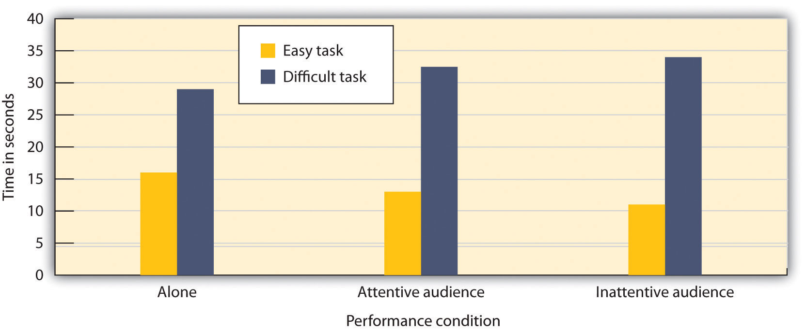
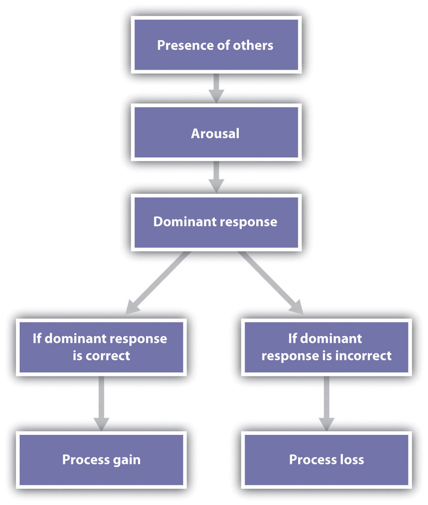
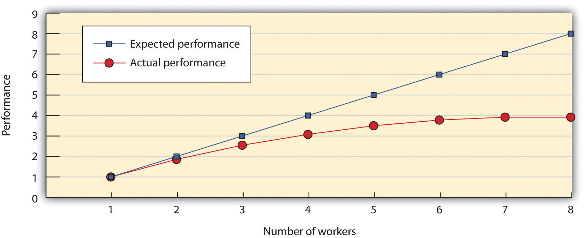
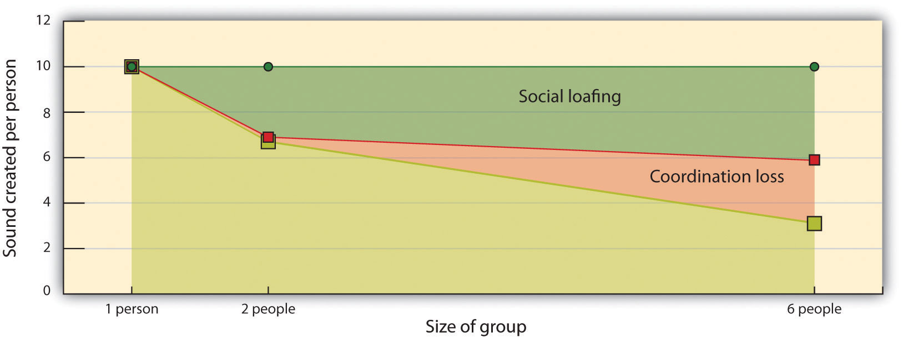
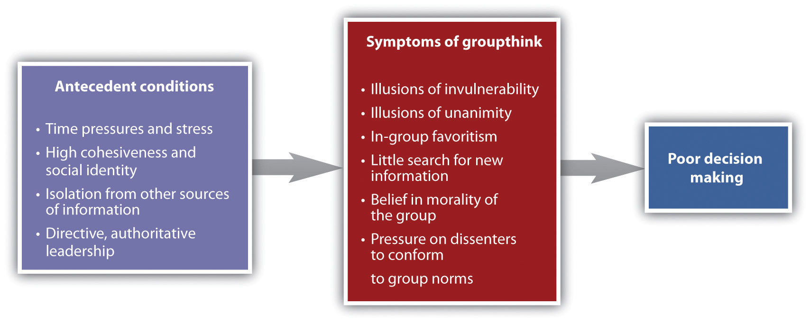
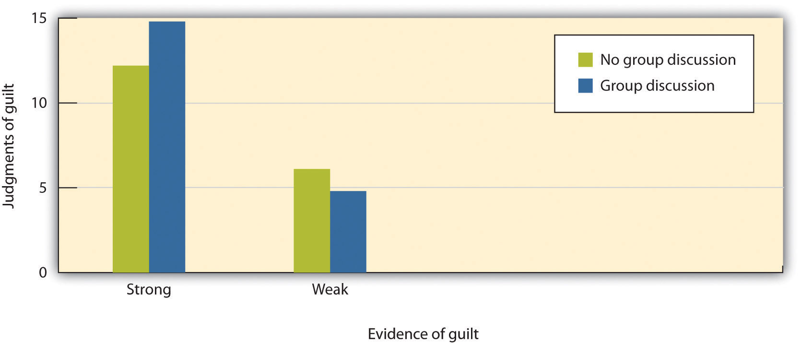
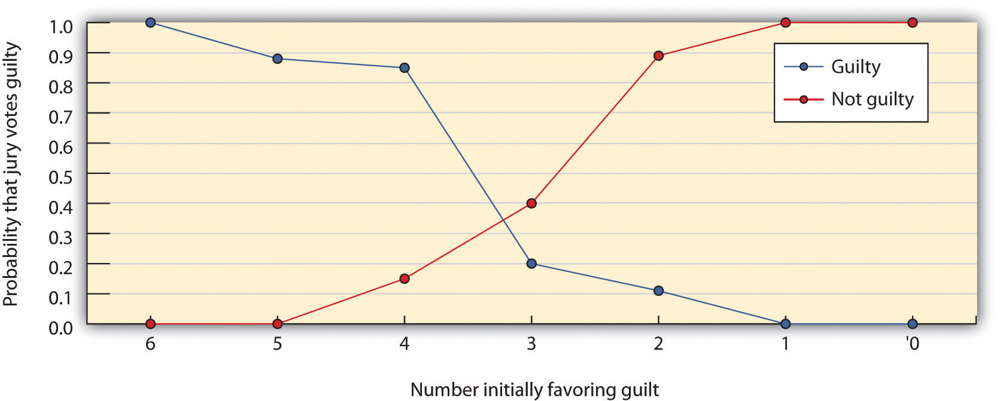

Source: Image courtesy of Wikimedia, http://commons.wikimedia.org/wiki/File:Bush_War_Budget_2003.jpg.
In 2003, President George Bush, in his State of the Union address, made specific claims about Iraq’s weapons of mass destruction. The president claimed that there was evidence for “500 tons of sarin, mustard and VX nerve agent; mobile biological weapons labs” and “a design for a nuclear weapon.”
But none of this was true, and in 2004, after the war was started, Bush himself called for an investigation of intelligence failures about such weapons preceding the invasion of Iraq.
Many Americans were surprised at the vast failure of intelligence that led the United States into war. In fact, Bush’s decision to go to war based on erroneous facts is part of a long tradition of decision making in the White House.
Psychologist Irving Janis popularized the term groupthink in the 1970s to describe the dynamic that afflicted the Kennedy administration when the president and a close-knit band of advisers authorized the ill-fated Bay of Pigs invasion in Cuba in 1961. The president’s view was that the Cuban people would greet the American-backed invaders as liberators who would replace Castro’s dictatorship with democracy. In fact, no Cubans greeted the American-backed force as liberators, and Cuba rapidly defeated the invaders.
The reasons for the erroneous consensus are easy to understand, at least in hindsight. Kennedy and his advisers largely relied on testimony from Cuban exiles, coupled with a selective reading of available intelligence. As is natural, the president and his advisers searched for information to support their point of view. Those supporting the group’s views were invited into the discussion. In contrast, dissenters were seen as not being team players and had difficulty in getting a hearing. Some dissenters feared to speak loudly, wanting to maintain political influence. As the top team became more selective in gathering information, the bias of information that reached the president became ever more pronounced.
A few years later, the administration of President Lyndon Johnson became mired in the Vietnam War. The historical record shows that once again, few voices at the very top levels of the administration gave the president the information he needed to make unbiased decisions. Johnson was frequently told that the United States was winning the hearts and minds of the Vietnamese but was rarely informed that most Vietnamese viewed the Americans as occupiers, not liberators. The result was another presidential example of groupthink, with the president repeatedly surprised by military failures.
How could a president, a generation after the debacles at the Bay of Pigs and in Vietnam, once again fall prey to the well-documented problem of groupthink? The answer, in the language of former Treasury Secretary Paul O’Neill, is that Vice President Dick Cheney and his allies formed “a praetorian guard that encircled the president” to block out views they did not like. Unfortunately, filtering dissent is associated with more famous presidential failures than spectacular successes.
Source: Levine, D. I. (2004, February 5). Groupthink and Iraq. San Francisco Chronicle. Retrieved from http://www.sfgate.com/cgi-bin/article.cgi?file=/chronicle/archive/2004/02/05/EDGV34OCEP1.DTL.
Although people and their worlds have changed dramatically over the course of our history, one fundamental aspect of human existence remains essentially the same. Just as our primitive ancestors lived together in small social groups of families, tribes, and clans, people today still spend a great deal of time in social groups. We go to bars and restaurants, we study together in groups, and we work together on production lines and in businesses. We form governments, play together on sports teams, and use Internet chat rooms and users groups to communicate with others. It seems that no matter how much our world changes, humans will always remain social creatures. It is probably not incorrect to say that the human group is the very foundation of human existence; without our interactions with each other, we would simply not be people, and there would be no human culture.
We can define a social groupA set of individuals who are together with a shared purpose and who normally share a social identity. as a set of individuals with a shared purpose and who normally share a positive social identity. While social groups form the basis of human culture and productivity, they also produce some of our most profound disappointments. Groups sometimes create the very opposite of what we might hope for, such as when a group of highly intelligent advisers lead their president to make a poor decision, when a peaceful demonstration turns into a violent riot, or when the members of a clique at a high school tease other students until they become violent.
In this chapter, we will first consider how social psychologists define social groups. This definition will be important not only in this chapter, which deals with small groups working on projects or making decisions, but also in Chapter 12 "Stereotypes, Prejudice, and Discrimination" and Chapter 13 "Competition and Cooperation in Our Social Worlds", in which we will discuss relationships between larger social groups. In this chapter, we will also see that effective group decision making is important in business, education, politics, law, and many other areas (Kovera & Borgida, 2010; Straus, Parker, & Bruce, 2011).Kovera, M. B., & Borgida, E. (2010). Social psychology and law. In S. T. Fiske, D. T. Gilbert, & G. Lindzey (Eds.), Handbook of social psychology (5th ed., Vol. 2, pp. 1343–1385). Hoboken, NJ: John Wiley & Sons; Straus, S. G., Parker, A. M., & Bruce, J. B. (2011). The group matters: A review of processes and outcomes in intelligence analysis. Group Dynamics: Theory, Research, and Practice, 15(2), 128–146. We will close the chapter with a set of recommendations for improving group performance.
Taking all the data together, one psychologist once went so far as to comment that “humans would do better without groups!” (Buys, 1978).Buys, B. J. (1978). Humans would do better without groups. Personality and Social Psychology Bulletin, 4, 123–125. What Buys probably meant by this comment, I think, was to acknowledge the enormous force of social groups and to point out the importance of being aware that these forces can have both positive and negative consequences (Allen & Hecht, 2004; Kozlowski & Ilgen, 2006; Larson, 2010; Levi, 2007; Nijstad, 2009).Allen, N. J., & Hecht, T. D. (2004). The “romance of teams”: Toward an understanding of its psychological underpinnings and implications. Journal of Occupational and Organizational Psychology, 77(4), 439–461. doi: 10.1348/0963179042596469; Kozlowski, S. W. J., & Ilgen, D. R. (2006). Enhancing the effectiveness of work groups and teams. Psychological Science in the Public Interest, 7(3), 77–124. doi: 10.1111/j.1529–1006.2006.00030.x; Larson, J. R., Jr. (2010). In search of synergy in small group performance. New York, NY: Psychology Press; Levi, D. (2007). Group dynamics for teams (2nd ed.). Thousand Oaks, CA: Sage; Nijstad, B. A. (2009). Group performance. New York, NY: Psychology Press. Keep this important idea in mind as you read this chapter.
Although it might seem that we could easily recognize a social group when we come across one, it is actually not that easy to define what makes a group of people a social group. Imagine, for instance, a half dozen people waiting in a checkout line at a supermarket. You would probably agree that this set of individuals should not be considered a social group because the people are not meaningfully related to each other. And the individuals watching a movie at a theater or those attending a large lecture class might also be considered simply as individuals who are in the same place at the same time but who are not connected as a social group.
Of course, a group of individuals who are currently in the same place may nevertheless easily turn into a social group if something happens that brings them “together.” For instance, if a man in the checkout line of the supermarket suddenly collapsed on the floor, it is likely that the others around him would quickly begin to work together to help him. Someone would call an ambulance, another might give CPR, and another might attempt to contact his family. Similarly, if the movie theater were to catch on fire, a group would quickly form as the individuals attempted to leave the theater. And even the class of students might come to feel like a group if the instructor continually praised it for being the best (or the worst) class that she has ever had. It has been a challenge to characterize what the “something” is that makes a group a group, but one term that has been used is entitativity (Campbell, 1958; Lickel et al., 2000).Campbell, D. T. (1958). Common fate, similarity and other indices of the status of aggregate persons as social entities. Behavioral Science, 3, 14–25; Lickel, B., Hamilton, D. L., Wieczorkowska, G., Lewis, A., Sherman, S. J., & Uhles, A. N. (2000). Varieties of groups and the perception of group entitativity. Journal of Personality and Social Psychology, 78(2), 223–246. EntitativityThe perception, either by the group members themselves or by others, that the individuals are a group. refers to something like “groupiness”—the perception, either by the group members themselves or by others, that the people together are a group.
One determinant of entitativity is a cognitive one—the perception of similarity. A group can only be a group to the extent that its members have something in common; at minimum, they are similar because they all belong to the group. If a collection of people are interested in the same things, share the same opinions and beliefs, or work together on the same task, then it seems they should be considered—by both themselves and others—to be a group. However, if there are a lot of differences among the individuals, particularly in their values, beliefs, and behaviors, then they are not likely to be seen as a group.
People generally get together to form groups precisely because they are similar—they are all interested in playing poker, listening to rock and roll, or passing a chemistry test. And groups tend to fall apart because the group members become dissimilar and thus no longer have enough in common to keep them together (Crump, Hamilton, Sherman, Lickel, & Thakkar, 2010; Miles & Kivlighan, 2008).Crump, S. A., Hamilton, D. L., Sherman, S. J., Lickel, B., & Thakkar, V. (2010). Group entitativity and similarity: Their differing patterns in perceptions of groups. European Journal of Social Psychology, 40(7), 1212–1230. doi: 10.1002/ejsp.716; Miles, J. R., & Kivlighan, D. M., Jr. (2008). Team cognition in group interventions: The relation between coleaders’ shared mental models and group climate. Group Dynamics: Theory, Research, and Practice, 12(3), 191–209. doi: 10.1037/1089–2699.12.3.191
Although similarity is critical, it is not the only factor that creates a group. Groups have more entitativity when the group members have frequent interaction and communication with each other. Although communication can occur in groups that meet together in a single place, it can also occur among individuals who are at great distances from each other. The members of a research team who communicate regularly via Skype, for instance, might have frequent interactions and feel as if they are a group even though they never or rarely meet in person.
Interaction is particularly important when it is accompanied by interdependence—the extent to which the group members are mutually dependent upon each other to reach a goal. In some cases, and particularly in working groups, interdependence involves the need to work together to successfully accomplish a task. Individuals playing baseball are dependent upon each other to be able to play the game and also to play well. Each individual must do his or her job in order for the group to function. And we are also interdependent when we work together to write a research article or create a class project. When group members are interdependent, they report liking each other more, tend to cooperate and communicate with each other to a greater extent, and may be more productive (Deutsch, 1949).Deutsch, M. (1949). An experimental study of the effects of cooperation and competition upon group processes. Human Relations, 2, 199–231.
Still another aspect of working groups whose members spend some time working together and that makes them seem “groupy” is that they develop group structure—the stable norms and roles that define the appropriate behaviors for the group as a whole and for each of the members. The relevant social norms for groups include customs, traditions, standards, and rules, as well as the general values of the group. These norms tell the group members what to do to be good group members and give the group more entitativity. Effective groups also develop and assign social roles (the expected behaviors) to group members. For instance, some groups may be structured such that they have a president, a secretary, and many different working committees.
Although cognitive factors such as perceived similarity, communication, interdependence, and structure are part of what we mean by being a group, they do not seem to be sufficient. Groups may be seen as groups even if they have little independence, communication, or structure. Partly because of this difficulty, an alternative approach to thinking about groups, and one that has been very important in social psychology, makes use of the affective feelings that we have toward the groups that we belong to. Social identity refers to the part of the self-concept that results from our membership in social groups (Hogg, 2003).Hogg, M. A. (2003). Social identity. In M. R. Leary & J. P. Tangney (Eds.), Handbook of self and identity (pp. 462–479). New York, NY: Guilford Press. Generally, because we prefer to remain in groups that we feel good about, the outcome of group membership is a positive social identity—our group memberships make us feel good about ourselves.
According to the social identity approach, a group is a group when the members experience social identity—when they define themselves in part by the group that they belong to and feel good about their group membership (Hogg, 2003, 2010).Hogg, M. A. (2003). Social identity. In M. R. Leary & J. P. Tangney (Eds.), Handbook of self and identity (pp. 462–479). New York, NY: Guilford Press; Hogg, M. A. (2010). Human groups, social categories, and collective self: Social identity and the management of self-uncertainty. In R. M. Arkin, K. C. Oleson, & P. J. Carroll (Eds.), Handbook of the uncertain self (pp. 401–420). New York, NY: Psychology Press. This identity might be seen as a tendency on the part of the individual to talk positively about the group to others, a general enjoyment of being part of the group, and a feeling of pride that comes from group membership. Because identity is such an important part of group membership, we may attempt to create it to make ourselves feel good, both about our group and about ourselves. Perhaps you know some people—maybe you are one—who wear the clothes of their crowd or school to highlight their identity with the group because they want to be part of, and accepted by, the other group members.
Although many groups are basically static, performing the same types of tasks day in and day out, other groups are more dynamic. In fact, in almost all groups there is at least some change; members come and go, and the goals of the group may change. And even groups that have remained relatively stable for long periods of time may suddenly make dramatic changes, for instance, when they face a crisis, such as a change in task goals or the loss of a leader. Groups may also lose their meaning and identity as they successfully meet the goals they initially set out to accomplish.
One way to understand group development is to consider the potential stages that groups generally go through. As you can see in Figure 11.1 "Stages of Group Development", the stages involve forming, storming, norming and performing, and adjourning. The group formation stage occurs when the members of the group come together and begin their existence as a group. In some cases, when a new group, such as a courtroom jury, forms to accomplish a goal, the formation stage occurs relatively quickly and is appropriately considered the group’s first stage. In other cases, however, the process of group formation occurs continually over a long period of time, such as when factory workers leave their jobs and are replaced by new employees, or when a fraternity or sorority recruits new members every year to replace the old ones who leave at the end of the school year.
Figure 11.1 Stages of Group Development

This figure represents a general model of the phases of group development, beginning with group formation and ending with adjournment. It should be kept in mind, however, that the stages are not necessarily sequential, nor do all groups necessarily pass through all stages.
The development stage is important for the new members as well as for the group itself. During this time, the group and the individual will exchange knowledge about appropriate norms, including the existing group structures, procedures, and routines. The individual will need to learn about the group and determine how he or she is going to fit in. And the group may be inspecting the individual’s characteristics and appropriateness as a group member. This initial investigation process may end up with the individual rejecting the group or the group rejecting the individual.
If the group formation stage can be compared to childhood, there is no doubt that the next stage—storming—can be compared to adolescence. As the group members begin to get to know each other, they may find that they don’t always agree on everything. In this stage, members may attempt to make their own views known, expressing their independence and attempting to persuade the group to accept their ideas. Storming may occur as the group first gets started, and it may recur at any point during the group’s development, particularly if the group experiences stress caused by a negative event, such as a setback in progress toward the group goal. In some cases, the conflict may be so strong that the group members decide that the group is not working at all and they disband. In fact, field studies of real working groups have shown that a large percentage of new groups never get past the forming and storming stages before breaking up (Kuypers, Davies, & Hazewinkel, 1986).Kuypers, B. C., Davies, D., & Hazewinkel, A. (1986). Developmental patterns in self-analytic groups. Human Relations, 39(9), 793–815.
Although storming can be harmful to group functioning and thus groups must work to keep it from escalating, some conflict among group members may in fact be helpful to the group. Sometimes the most successful groups are those that have successfully passed through a storming stage, because conflict may increase the productivity of the group, unless the conflict becomes so extreme that the group disbands prematurely (Rispens & Jehn, 2011).Rispens, S., & Jehn, K. A. (2011). Conflict in workgroups: Constructive, destructive, and asymmetric conflict. In D. De Cremer, R. van Dick, & J. K. Murnighan (Eds.), Social psychology and organizations (pp. 185–209). New York, NY: Routledge/Taylor & Francis Group. Groups that experience no conflict at all may be unproductive because the members are bored, uninvolved, and unmotivated, and because they do not think creatively or openly about the topics of relevance to them. In order to progress, the group needs to develop new ideas and approaches, and this requires that the members discuss their different opinions about the decisions that the group needs to make.
Assuming that the storming does not escalate too far, the group will move into a stage in which the appropriate norms and roles for the group are developed, allowing the group to establish a routine and effectively work together. At this stage—the norming and performing stage—the individual group members may report great satisfaction and identification with the group, as well as strong group identity. Groups that have effectively reached this stage have the ability to meet goals and survive challenges. And at this point, the group becomes well tuned to its task and is able to perform the task efficiently.
In one interesting observational study of the group development process in real groups, Gersick (1988, 1989)Gersick, C. J. (1988). Time and transition in work teams: Toward a new model of group development. Academy of Management Journal, 31(1), 9–41; Gersick, C. (1989). Marking time: Predictable transitions in task groups. Academy of Management Journal, 32, 274–309. observed a number of teams as they worked on different projects. The teams were selected such that they were all working within a specific time frame, but the time frame itself varied dramatically—from 8 to 25 meetings held over periods ranging from 11 days to 6 months. Despite this variability, Gersick found that each of the teams followed a very similar pattern of norming and performing. In each case, the team established well-defined norms regarding its method of attacking its task in its very first meeting. And each team stayed with this approach, with very little deviation, during the first half of the time it had been allotted. However, midway through the time it had been given to complete the project (and regardless of whether that was after 4 meetings or after 12), the group suddenly had a meeting in which it decided to change its approach. Then, each of the groups used this new method of performing the task during the rest of its allotted time. It was as if a sort of alarm clock went off at the halfway point, which led each group to rethink its approach.
Most groups eventually come to an end—the adjournment stage. In some cases, this is because the task for which the group was formed has been completed, whereas in other cases, it occurs because the group members have developed new interests outside the group. In any case, because people who have worked in a group have likely developed a strong identification with the group and the other group members, the adjournment phase is frequently stressful, and participants may resist the breakup. Faced with these situations, individuals frequently plan to get together again in the future, exchanging addresses and phone numbers, even though they may well know that it is unlikely they will actually do so. Sometimes it is useful for the group to work ahead of time to prepare members for the breakup.
When important decisions need to be made, or when tasks need to be performed quickly or effectively, we frequently create groups to accomplish them. Many people believe that groups are effective for making decisions and performing other tasks (Nijstad, Stroebe, & Lodewijkx, 2006),Nijstad, B. A., Stroebe, W., & Lodewijkx, H. F. M. (2006). The illusion of group productivity: A reduction of failures explanation. European Journal of Social Psychology, 36(1), 31–48. doi: 10.1002/ejsp.295 and such a belief seems commonsensical. After all, because groups have many members, they will also have more resources and thus more ability to efficiently perform tasks and make good decisions. However, although groups sometimes do perform better than individuals, this outcome is not guaranteed. Let’s consider some of the many variables that can influence group performance.
In one of the earliest social psychological studies, Norman Triplett (1898)Triplett, N. (1898). The dynamogenic factors in pacemaking and competition. American Journal of Psychology, 9(4), 507–533. investigated how bicycle racers were influenced by the social situation in which they raced. Triplett found something very interesting—the racers who were competing with other bicyclers on the same track rode significantly faster than bicyclers who were racing alone, against the clock. This led Triplett to hypothesize that people perform tasks better when the social context includes other people than when they do the tasks alone. Subsequent findings validated Triplett’s results, and other experiments have shown that the presence of others can increase performance on many types of tasks, including jogging, shooting pool, lifting weights, and working on math and computer problems (Geen, 1989; Guerin, 1983; Robinson-Staveley & Cooper, 1990; Strube, Miles, & Finch, 1981).Geen, R. G. (1989). Alternative conceptions of social facilitation. In P. Paulus (Ed.), Psychology of group influence (2nd ed., pp. 15–51). Hillsdale, NJ: Lawrence Erlbaum; Guerin, B. (1983). Social facilitation and social monitoring: A test of three models. British Journal of Social Psychology, 22(3), 203–214; Robinson-Staveley, K., & Cooper, J. (1990). Mere presence, gender, and reactions to computers: Studying human-computer interaction in the social context. Journal of Experimental Social Psychology, 26(2), 168–183; Strube, M. J., Miles, M. E., & Finch, W. H. (1981). The social facilitation of a simple task: Field tests of alternative explanations. Personality and Social Psychology Bulletin, 7(4), 701–707. The tendency to perform tasks better or faster in the presence of others is known as social facilitationThe tendency to perform tasks better or faster in the presence of others..
Although people sometimes perform better when they are in groups than they do alone, the situation is not that simple. Perhaps you can remember a time when you found that a task you could perform well alone (e.g., giving a public presentation, playing the piano, shooting basketball free throws) was not performed as well when you tried it with, or in front of, others. Thus it seems that the conclusion that being with others increases performance cannot be entirely true and that sometimes the presence of others can worsen our performance. The tendency to perform tasks more poorly or slower in the presence of others is known as social inhibitionThe tendency to perform tasks more poorly or slower in the presence of others..
To study social facilitation and social inhibition, Hazel Markus (1978) Markus, H. (1978). The effect of mere presence on social facilitation: An unobtrusive test. Journal of Experimental Social Psychology, 14, 389–397. gave research participants both an easy task (putting on and tying their shoes) and an unfamiliar and thus more difficult task (putting on and tying a lab coat that tied in the back). The research participants were asked to perform both tasks in one of three social situations—alone, with a confederate present who was watching them, or with a confederate present who sat in the corner of the room repairing a piece of equipment without watching. As you can see in Figure 11.2 "Group Task Performance", Markus found first that the difficult task was performed more slowly overall. But she also found an interaction effect, such that the participants performed the easy task faster but the more difficult task slower when a confederate was present in the room. Furthermore, it did not matter whether the other person was paying attention to their performance or whether the other person just happened to be in the room working on another task—the mere presence of another person nearby influenced performance.
Figure 11.2 Group Task Performance
In this experiment, participants were asked to perform a well-learned task (tying their shoes) and a poorly learned task (putting on a lab coat that tied in the back). There is both a main effect of task difficulty and a task-difficulty-by-performance-condition interaction. Data are from Markus (1978).Markus, H. (1978). The effect of mere presence on social facilitation: An unobtrusive test. Journal of Experimental Social Psychology, 14, 389–397.
These results convincingly demonstrated that working around others could either help or hinder performance. But why would this be? One explanation of the influence of others on task performance was proposed by Robert Zajonc (1965).Zajonc, R. B. (1965). Social facilitation. Science, 149, 269–274. As shown in Figure 11.3 "Explaining Social Facilitation and Social Inhibition", Zajonc made use of the affective component of arousal in his explanation. Zajonc argued that when we are with others, we experience more arousal than we do when we are alone, and that this arousal increases the likelihood that we will perform the dominant responseThe action that we are most likely to emit in any given situation.—the action that we are most likely to emit in any given situation.
Figure 11.3 Explaining Social Facilitation and Social Inhibition
According to the social facilitation model of Robert Zajonc (1965),Zajonc, R. B. (1965). Social facilitation. Science, 149, 269–274.the mere presence of others produces arousal, which increases the probability that the dominant response will occur. If the dominant response is correct, the task is performed better, whereas if the dominant response is incorrect, the task is performed more poorly.
The important aspect of Zajonc’s theory was that the experience of arousal and the resulting increase in the performance of the dominant response could be used to predict whether the presence of others would produce social facilitation or social inhibition. Zajonc argued that if the task to be performed was relatively easy, or if the individual had learned to perform the task very well (a task such as pedaling a bicycle or tying one’s shoes), the dominant response was likely to be the correct response, and the increase in arousal caused by the presence of others would improve performance. On the other hand, if the task was difficult or not well learned (e.g., solving a complex problem, giving a speech in front of others, or tying a lab apron behind one’s back), the dominant response was likely to be the incorrect one; and because the increase in arousal would increase the occurrence of the (incorrect) dominant response, performance would be hindered.
Zajonc’s theory explained how the presence of others can increase or decrease performance, depending on the nature of the task, and a great deal of experimental research has now confirmed his predictions. In a meta-analysis, Bond and Titus (1983)Bond, C. F., & Titus, L. J. (1983). Social facilitation: A meta-analysis of 241 studies. Psychological Bulletin, 94(2), 265–292. looked at the results of over 200 studies using over 20,000 research participants and found that the presence of others did significantly increase the rate of performance on simple tasks and decrease both the rate and the quality of performance on complex tasks.
One interesting aspect of Zajonc’s theory is that because it only requires the concepts of arousal and dominant response to explain task performance, it predicts that the effects of others on performance will not necessarily be confined to humans. Zajonc reviewed evidence that dogs ran faster, chickens ate more feed, ants built bigger nests, and rats had more sex when other dogs, chickens, ants, and rats, respectively, were around (Zajonc, 1965).Zajonc, R. B. (1965). Social facilitation. Science, 149, 269–274. In fact, in one of the most unusual of all social psychology experiments, Zajonc, Heingartner, and Herman (1969)Zajonc, R. B., Heingartner, A., & Herman, E. M. (1969). Social enhancement and impairment of performance in the cockroach. Journal of Personality and Social Psychology, 13(2), 83–92. found that cockroaches ran faster on straight runways when other cockroaches were observing them (from behind a plastic window) but that they ran slower, in the presence of other roaches, on a maze that involved making a difficult turn, presumably because running straight was the dominant response, whereas turning was not.
Although the arousal model proposed by Zajonc is perhaps the most elegant, other explanations have also been proposed to account for social facilitation and social inhibition. One modification argues that we are particularly influenced by others when we perceive that the others are evaluating us or competing with us (Szymanski & Harkins, 1987).Szymanski, K., & Harkins, S. G. (1987). Social loafing and self-evaluation with a social standard. Journal of Personality and Social Psychology, 53(5), 891–897. This makes sense because in these cases, another important motivator of human behavior—the desire to enhance the self—is involved in addition to arousal. In one study supporting this idea, Strube and his colleagues (Strube, Miles, & Finch, 1981)Strube, M. J., Miles, M. E., & Finch, W. H. (1981). The social facilitation of a simple task: Field tests of alternative explanations. Personality and Social Psychology Bulletin, 7(4), 701–707. found that the presence of spectators increased the speed of joggers only when the spectators were facing the joggers and thus could see them and assess their performance.
The presence of others who expect us to do well and who are thus likely to be particularly distracting has been found to have important consequences in some real-world situations. For example, Baumeister and Steinhilber (1984)Baumeister, R. F., & Steinhilber, A. (1984). Paradoxical effects of supportive audiences on performance under pressure: The home field disadvantage in sports championships. Journal of Personality and Social Psychology, 47(1), 85–93. found that professional athletes frequently performed more poorly than would be expected in crucial games that were played in front of their own fans (such as the final baseball game of the World Series championship).
Working in groups has some benefits. Because groups consist of many members, group performance is almost always better than the performance of an individual acting alone, and group decisions are generally more accurate than the decisions of any one individual. Many heads are better than one in terms of knowledge, memory, physical strength, and other abilities. The group from the National Aeronautics and Space Administration that worked together to land a human on the moon, a rock band whose members are writing a new song together, or a surgical team in the middle of a complex operation may coordinate their efforts so well that is clear that the same outcome could never have occurred if the individuals had worked alone, or in another group of less well-suited individuals. In these cases, the knowledge and skills of the individuals seem to work together to be effective, and the outcome of the group appears to be enhanced. When groups work better than we would expect, given the individuals who form them, we call the outcome a process gainA situation in which a group performs better than we would expect, given the characteristics of the members of the group..
There are at least some data suggesting that groups may in some cases experience process gains. For instance, weber and Hertel (2007)weber, B., & Hertel, G. (2007). Motivation gains of inferior group members: A meta-analytical review. Journal of Personality and Social Psychology, 93(6), 973–993. found in a recent meta-analysis that individuals can in some cases exert higher motivation when working in a group compared with working individually, resulting in increased group performance. This is particularly true for less capable, inferior group members who seem to become inspired to work harder when they are part of a group. On the other hand, there are also costs to working in groups—for instance, the disastrous decision made by the team of advisors to President Kennedy that led to the unsuccessful invasion of Cuba in 1961, as well as countless other poor decisions. In these cases, the groups experience process losses. A process lossA situation in which a group performs more poorly than we would expect, given the characteristics of the members of the group. is an outcome in situations in which groups perform more poorly than we would expect, given the characteristics of the members of the group.
One way to think about the benefits of groups is to compare the potential productivity of the group—that is, what the group should be able to do, given its membership—with the actual productivity of the group. For example, on a rope-pulling task, the potential group productivity (the strength with which the group should pull when working together) would be calculated as the sum of all the individual inputs. The difference between the expected productivity of the group and the actual productivity of the group (i.e., the extent to which the group is more or less than the sum of its parts) is determined by the group processThe events that occur while the group is working together on the task., defined as the events that occur while the group is working together on the task. When the outcome of the group performance is better than would be expected on the basis of the members’ characteristics (the group pulls harder than expected), there is a process gain; when the outcome of the group performance is worse than would be expected on the basis of the members’ characteristics, there is a process loss. Mathematically, we can write the following equation to express this relationship:
actual productivity = potential productivity − process loss + process gain.As you can see, group performance is another example of a case in which person and situation variables work together because it depends on both the skills of the people in the group and the way these resources are combined as the group members work together.
No matter what type of group we are considering, the group will naturally attempt to recruit the best people they can find to help them meet their goals. Member characteristicsThe relevant traits, skills, or abilities of the individual group members. are the relevant traits, skills, or abilities of the individual group members. On a rope-pulling task, for instance, the member characteristic is the ability of each of group member to pull hard on the rope on his or her own. In addition to having different skills, people differ in personality factors that relate to group performance. Some people are highly motivated to join groups and to make positive contributions to those groups, whereas others are more wary of group membership and prefer to meet their goals working alone. Furthermore, when they are in groups, people may be expected to respond somewhat differently in group interactions, because each is using the group to meet his or her own social and personal goals.
The extent to which member skill influences group performance varies across different group tasks. On an automobile assembly line, performing the task requires only relatively minimal skills, and there is not a lot of coordination among the individuals involved. In this case, it is primarily the number and skill of the individuals who are working on the task that influences the group outcome. In other cases, such as a surgical team or a work team within a corporation, the group includes individuals with a wide variety of different skills, each working at very different tasks. In cases such as these, communication and coordination among the group members is essential, and thus group process will be very important. As an example of variation in the importance of member skills, Jones (1974)Jones, M. B. (1974). Regressing group on individual effectiveness. Organizational Behavior and Human Decision Processes, 11(3), 426–451. found that the skill of individual baseball players accounted for 99% of the team performance on baseball teams (and thus group process accounted for only 1%) but that the skill of individual basketball players accounted for only 35% of the team performance on basketball teams (and thus group process accounted for 65%).
Although the characteristics of the group members themselves are critical, they represent only the person part of the equation. To fully understand group performance, we must also consider the particulars of the group’s situation—for instance, the task that the group needs to accomplish. Let’s now consider some of the different types of tasks that might be performed by groups and how they might influence performance (Hackman & Morris, 1975; Straus, 1999).Hackman, J., & Morris, C. (1975). Group tasks, group interaction processes, and group performance effectiveness: A review and proposed integration. In L. Berkowitz (Ed.), Advances in experimental social psychology (Vol. 8, pp. 45–99). New York, NY: Academic Press; Straus, S. G. (1999). Testing a typology of tasks: An empirical validation of McGrath’s (1984) group task circumplex. Small Group Research, 30(2), 166–187. doi: 10.1177/104649649903000202 These classifications are summarized as follows:
Task division
Task combination
Group member performance
Task assessment
Task clarity
One basic distinction concerns whether the task can be divided into smaller subtasks or has to be done as a whole. Building a car on an assembly line or painting a house is a divisible taskA task in which each of the group members working on the job can do a separate part of the job at the same time., because each of the group members working on the job can do a separate part of the job at the same time. Groups are likely to be particularly productive on divisible tasks when the division of the work allows the group members to specialize in those tasks that they are best at performing. Writing a group term paper is facilitated if one group member is an expert typist, another is an expert at library research, and so forth. Climbing a mountain or moving a piano, on the other hand, is a unitary taskA task that has to be done all at once and cannot be divided up., because it has to be done all at once and cannot be divided up. In this case, specialization among group members is less useful, because each group member has to work on the same task at the same time.
Another way of classifying tasks is by the way the contributions of the group members are combined. On an additive taskA task in which the inputs of each of the group members are added together to create the group performance., the inputs of each group member are added together to create the group performance, and the expected performance of the group is the sum of group members’ individual inputs. A tug of war is a good example of an additive task because the total performance of a team is expected to be the sum of all the team members’ individual efforts.
On a compensatory (averaging) taskA task in which the group input is combined such that the performance of the individuals is averaged rather than added., however, the group input is combined such that the performance of the individuals is averaged rather than added. Imagine that you wanted to estimate the current temperature in your classroom, but you had no thermometer. One approach to getting an estimate would be to have each of the individuals in your class make his or her estimate of the temperature and then average the estimates together to create a group judgment. On decisions such as this, the average group judgment is likely to be more accurate than that made by most individuals (Armstrong, 2001; Surowiecki, 2004).Armstrong, J. S. (2001). Principles of forecasting: A handbook for researchers and practitioners. Norwell, MA: Kluwer Academic Publishers; Surowiecki, J. (2004). The wisdom of crowds: Why the many are smarter than the few and how collective wisdom shapes business, economies, societies, and nations (1st ed.). New York, NY: Doubleday.
Another task classification involves comparing tasks in which the group performance is dependent upon the abilities of the best member or members of the group with tasks in which the group performance is dependent upon the abilities of the worst member or members of the group. When the group’s performance is determined by the best group member, we call it a disjunctive taskA task in which the group’s performance is determined by the performance of the best group member.. Consider what might happen when a group is given a complicated problem to solve, such as this horse-trading problem:
A man buys a horse for $50. He later decides he wants to sell his horse and he gets $60. He then decides to buy it back and pays $70. However, he can no longer keep it, and he sells it for $80. Did he make money, lose money, or break even? Explain why.
The correct answer to the problem is not immediately apparent, and each group member will attempt to solve the problem. With some luck, one or more of the members will discover the correct solution, and when that happens, the other members will be able to see that it is indeed the correct answer. At this point, the group as a whole has correctly solved the problem, and the performance of the group is thus determined by the ability of the best member of the group.
In contrast, on a conjunctive taskA task in which the group’s performance is determined by the performance of the worst group member., the group performance is determined by the ability of the group member who performs most poorly. Imagine an assembly line in which each individual working on the line has to insert one screw into the part being made and that the parts move down the line at a constant speed. If any one individual is substantially slower than the others, the speed of the entire line will need to be slowed down to match the capability of that individual. As another example, hiking up a mountain in a group is also conjunctive because the group must wait for the slowest hiker to catch up.
Still another distinction among tasks concerns the specific product that the group is creating and how that group output is measured. An intellective taskA task in which the goal of the group is to make a decision or a judgment. involves the ability of the group to make a decision or a judgment and is measured by studying either the processes that the group uses to make the decision (such as how a jury arrives at a verdict) or the quality of the decision (such as whether the group is able to solve a complicated problem). A maximizing taskA task in which performance is measured by how rapidly the group works or by how much of a product they are able to make., on the other hand, is one that involves performance that is measured by how rapidly the group works or how much of a product they are able to make (e.g., how many computer chips are manufactured on an assembly line, how many creative ideas are generated by a brainstorming group, how fast a construction crew can build a house).
Finally, we can differentiate intellective task problems for which there is an objectively correct decision from those in which there is not a clear best decision. On a criterion taskA task in which the group can see that there is a clearly correct answer to the problem that is being posed., the group can see that there is a clearly correct answer to the problem that is being posed. Some examples would be finding solutions to mathematics or logic problems, such as the horse-trading problem.
On some criterion tasks, the correct answer is immediately seen as the correct one once it is found. For instance, what is the next letter in each of the following two patterns of letters?
J F M A M _
O T T F F _
In criterion problems such as this one, as soon as one of the group members finds the correct answer, the problem is solved because all the group members can see that it is correct. Criterion tasks in which the correct answer is obvious once it is found are known as “Eureka!” or “Aha!” tasks (Lorge, Fox, Davitz, & Brenner, 1958),Lorge, I., Fox, D., Davitz, J., & Brenner, M. (1958). A survey of studies contrasting the quality of group performance and individual performance. Psychological Bulletin, 55(6), 337–372. named for the response that we have when we see the correct solution.
In other types of criterion-based tasks, there is an objectively correct answer, although that answer is not immediately obvious. For instance, consider again the horse-trading problem. In this case, there is a correct answer, but it may not be apparent to the group members even when it is proposed by one or more of them (for this reason, we might call this a “non-Eureka” task). In fact, in one study using the horse-trading problem, only 80% of the groups in which the correct answer was considered actually decided upon that answer as the correct one after the members had discussed it together.
In still other criterion-based tasks, experts must be used to assess the quality or creativity of the group’s performance. Einhorn, Hogarth, and Klempner (1977)Einhorn, H. J., Hogarth, R. M., & Klempner, E. (1977). Quality of group judgment. Psychological Bulletin, 84(1), 158–172. asked groups of individuals to imagine themselves as a group of astronauts who are exploring the moon but who have become stranded from their base. The problem is to determine which of the available pieces of equipment (e.g., oxygen bottles, a rope, a knife) they should take with them as they attempt to reach the base. To assess group performance, experts on the difficulties of living in space made judgments about the quality of the group decisions. Non-Eureka tasks represent an interesting challenge for groups because even when they have found what they think is a good answer, they may still need to continue their discussion to convince themselves that their answer is the best they can do and that they can therefore stop their deliberation.
In contrast to a criterion task, in a judgmental taskA group task in which there is no clearly correct answer to the problem. there is no clearly correct answer to the problem. Judgmental tasks involve such decisions as determining the innocence or guilt of an accused person in a jury or making an appropriate business decision. Because there is no objectively correct answer on judgmental tasks, the research approach usually involves studying the processes that the group uses to make the decision rather than measuring the outcome of the decision itself. Thus the question of interest on judgmental tasks is not “Did the group get the right answer?” but rather “How did the group reach its decision?”
Process losses are caused by events that occur within the group that make it difficult for the group to live up to its full potential. In one study, Ringelmann (1913; reported in Kravitz & Martin, 1986)Kravitz, D. A., & Martin, B. (1986). Ringelmann rediscovered: The original article. Journal of Personality and Social Psychology, 50, 936–941. investigated the ability of individuals to reach their full potential when working together on tasks. Ringelmann had individual men and groups of various numbers of men pull as hard as they could on ropes while he measured the maximum amount that they were able to pull. Because rope pulling is an additive task, the total amount that could be pulled by the group should be the sum of the contributions of the individuals. However, as shown in Figure 11.4 "The Ringelmann Effect", although Ringelmann did find that adding individuals to the group increased the overall amount of pulling on the rope (the groups were better than any one individual), he also found a substantial process loss. In fact, the loss was so large that groups of three men pulled at only 85% of their expected capability, whereas groups of eight pulled at only 37% of their expected capability.
Figure 11.4 The Ringelmann Effect
Ringelmann found that although more men pulled harder on a rope than fewer men did, there was a substantial process loss in comparison with what would have been expected on the basis of their individual performances.
This type of process loss, in which group productivity decreases as the size of the group increases, has been found to occur on a wide variety of tasks, including maximizing tasks such as clapping and cheering and swimming (Latané, Williams, & Harkins, 1979; Williams, Nida, Baca, & Latané, 1989),Latané, B., Williams, K., & Harkins, S. (1979). Many hands make light the work: The causes and consequences of social loafing. Journal of Personality and Social Psychology, 37(6), 822–832; Williams, K. D., Nida, S. A., Baca, L. D., & Latane, B. (1989). Social loafing and swimming: Effects of identifiability on individual and relay performance of intercollegiate swimmers. Basic and Applied Social Psychology, 10(1), 73–81. and judgmental tasks such as evaluating a poem (Petty, Harkins, Williams, & Latané, 1977).Petty, R. E., Harkins, S. G., Williams, K. D., & Latané, B. (1977). The effects of group size on cognitive effort and evaluation. Personality and Social Psychology Bulletin, 3(4), 579–582. Furthermore, these process losses have been observed in different cultures, including India, Japan, and Taiwan (Gabrenya, Wang, & Latané, 1985; Karau & Williams, 1993).Gabrenya, W. K., Wang, Y., & Latané, B. (1985). Social loafing on an optimizing task: Cross-cultural differences among Chinese and Americans. Journal of Cross-Cultural Psychology, 16(2), 223–242; Karau, S. J., & Williams, K. D. (1993). Social loafing: A meta-analytic review and theoretical integration. Journal of Personality and Social Psychology, 65(4), 681–706.
Process losses in groups occur in part simply because it is difficult for people to work together. The maximum group performance can only occur if all the participants put forth their greatest effort at exactly the same time. Since, despite the best efforts of the group, it is difficult to perfectly coordinate the input of the group members, the likely result is a process loss such that the group performance is less than would be expected, as calculated as the sum of the individual inputs. Thus actual productivity in the group is reduced in part by coordination losses.
Coordination losses become more problematic as the size of the group increases because it becomes correspondingly more difficult to coordinate the group members. Kelley, Condry, Dahlke, and Hill (1965)Kelley, H. H., Condry, J. C., Jr., Dahlke, A. E., & Hill, A. H. (1965). Collective behavior in a simulated panic situation. Journal of Experimental Social Psychology, 1, 19–54. put individuals into separate booths and threatened them with electrical shock. Each person could avoid the shock, however, by pressing a button in the booth for 3 seconds. But the situation was arranged such that only one person in the group could press the button at one time, and so the group members needed to coordinate their actions. Kelley et al. found that larger groups had significantly more difficulty coordinating their actions to escape the shocks than did smaller groups.
In addition to being influenced by the coordination of activities, group performance is influenced by self-concern on the part of the individual group members. Since each group member is motivated at least in part by individual self-concerns, each member may desire, at least in part, to gain from the group effort without having to contribute very much. You may have been in a work or study group that had this problem—each group member was interested in doing well but also was hoping that the other group members would do most of the work for them. A group process loss that occurs when people do not work as hard in a group as they do when they are alone is known as social loafingA group process loss that occurs when people do not work as hard in a group as they do when they are alone. (Karau & Williams, 1993).Karau, S. J., & Williams, K. D. (1993). Social loafing: A meta-analytic review and theoretical integration. Journal of Personality and Social Psychology, 65(4), 681–706.
Differentiating Coordination Losses From Social Loafing
Latané, Williams, and Harkins (1979)Latané, B., Williams, K., & Harkins, S. (1979). Many hands make light the work: The causes and consequences of social loafing. Journal of Personality and social Psychology, 37(6), 822–832. conducted an experiment that allowed them to measure the extent to which process losses in groups were caused by coordination losses and by social loafing. Research participants were placed in a room with a microphone and were instructed to shout as loudly as they could when a signal was given. Furthermore, the participants were blindfolded and wore headsets that prevented them from either seeing or hearing the performance of the other group members. On some trials, the participants were told (via the headsets) that they would be shouting alone, and on other trials, they were told that they would be shouting with other participants. However, although the individuals sometimes did shout in groups, in other cases (although they still thought that they were shouting in groups) they actually shouted alone. Thus Latané and his colleagues were able to measure the contribution of the individuals, both when they thought they were shouting alone and when they thought they were shouting in a group.
Latané et al.’s results are presented in in the following figure, which shows the amount of sound produced per person. The top line represents the potential productivity of the group, which was calculated as the sum of the sound produced by the individuals as they performed alone. The middle line represents the performance of hypothetical groups, computed by summing the sound in the conditions in which the participants thought that they were shouting in a group of either two or six individuals, but where they were actually performing alone. Finally, the bottom line represents the performance of real two-person and six-person groups who were actually shouting together.
Figure 11.5 Coordination and Motivation Losses in Working Groups
Individuals who were asked to shout as loudly as they could shouted much less so when they were in larger groups, and this process loss was the result of both motivation and coordination losses. Data from Latané, Williams, and Harkins (1979).Latané, B., Williams, K., & Harkins, S. (1979). Many hands make light the work: The causes and consequences of social loafing. Journal of Personality and Social Psychology, 37(6), 822–832.
The results of the study are very clear. First, as the number of people in the group increased (from one to two to six), each person’s individual input got smaller, demonstrating the process loss that the groups created. Furthermore, the decrease for real groups (the lower line) is greater than the decrease for the groups created by summing the contributions of the individuals. Because performance in the summed groups is a function of motivation but not coordination, and the performance in real groups is a function of both motivation and coordination, Latané and his colleagues effectively showed how much of the process loss was due to each.
Even if groups are able to get beyond the process losses that result from coordination difficulties and social loafing, they can make effective decisions only when they are able to make use of the advantages that come with group membership. These advantages include the ability to pool the information that is known to each of the members and to test out contradictory ideas through group discussion. Group decisions can be better than individual decisions only when the group members act carefully and rationally—considering all the evidence and coming to an unbiased, fair, and open decision. However, these conditions are not always met in real groups.
As we saw in the chapter opener, one example of a group process that can lead to very poor group decisions is groupthinkAn outcome that occurs when a group, as a result of a flawed group process and strong conformity pressures, makes a very poor decision.. Groupthink occurs when a group that is made up of members who may actually be very competent and thus quite capable of making excellent decisions nevertheless ends up making a poor one as a result of a flawed group process and strong conformity pressures (Baron, 2005; Janis, 2007).Baron, R. S. (2005). So right it’s wrong: Groupthink and the ubiquitous nature of polarized group decision making. In M. P. Zanna (Ed.), Advances in experimental social psychology (Vol. 37, pp. 219–253). San Diego, CA: Elsevier Academic Press; Janis, I. L. (2007). Groupthink. In R. P. Vecchio (Ed.), Leadership: Understanding the dynamics of power and influence in organizations (2nd ed., pp. 157–169). Notre Dame, IN: University of Notre Dame Press. Groupthink is more likely to occur in groups in which the members are feeling strong social identity—for instance, when there is a powerful and directive leader who creates a positive group feeling, and in times of stress and crisis when the group needs to rise to the occasion and make an important decision. The problem is that groups suffering from groupthink become unwilling to seek out or discuss discrepant or unsettling information about the topic at hand, and the group members do not express contradictory opinions. Because the group members are afraid to express ideas that contradict those of the leader or to bring in outsiders who have other information, the group is prevented from making a fully informed decision. Figure 11.6 "Antecedents and Outcomes of Groupthink" summarizes the basic causes and outcomes of groupthink.
Figure 11.6 Antecedents and Outcomes of Groupthink
Although at least some scholars are skeptical of the importance of groupthink in real group decisions (Kramer, 1998),Kramer, R. M. (1998). Revisiting the Bay of Pigs and Vietnam decisions 25 years later: How well has the groupthink hypothesis stood the test of time? Organizational Behavior and Human Decision Processes, 73(2–3), 236–271. many others have suggested that groupthink was involved in a number of well-known and important, but very poor, decisions made by government and business groups. Decisions analyzed in terms of groupthink include the decision to invade Iraq made by President George Bush and his advisers; the decision of President John Kennedy and his advisers to commit U.S. forces to help with an invasion of Cuba, with the goal of overthrowing Fidel Castro in 1962; and the lack of response to warnings on an attack on Pearl Harbor, Hawaii, in 1941.
Careful analyses of the decision-making process in these cases have documented the role of conformity pressures. In fact, the group process often seems to be arranged to maximize the amount of conformity rather than to foster free and open discussion. In the meetings of the Bay of Pigs advisory committee, for instance, President Kennedy sometimes demanded that the group members give a voice vote regarding their individual opinions before the group actually discussed the pros and cons of a new idea. The result of these conformity pressures is a general unwillingness to express ideas that do not match the group norm.
The pressures for conformity also lead to the situation in which only a few of the group members are actually involved in conversation, whereas the others do not express any opinions. Because little or no dissent is expressed in the group, the group members come to believe that they are in complete agreement. In some cases, the leader may even select individuals (known as mindguards) whose job it is to help quash dissent and to increase conformity to the leader’s opinions.
An outcome of the high levels of conformity found in these groups is that the group begins to see itself as extremely valuable and important, highly capable of making high-quality decisions, and invulnerable. In short, the group members develop extremely high levels of conformity and social identity. Although this social identity may have some positive outcomes in terms of a commitment to work toward group goals (and it certainly makes the group members feel good about themselves), it also tends to result in illusions of invulnerability, leading the group members to feel that they are superior and that they do not need to seek outside information. Such a situation is conducive to terrible decision making and resulting fiascos.
Although group discussion generally improves the quality of a group’s decisions, this will only be true if the group discusses the information that is most useful to the decision that needs to be made. One difficulty is that groups tend to discuss some types of information more than others. In addition to the pressures to focus on information that comes from leaders and that is consistent with group norms, discussion is influenced by the way the relevant information is originally shared among the group members. The problem is that group members tend to discuss information that they all have access to while ignoring equally important information that is available to only a few of the members (Faulmüller, Kerschreiter, Mojzisch, & Schulz-Hardt, 2010; Reimer, Reimer, & Czienskowski (2010).Faulmüller, N., Kerschreiter, R., Mojzisch, A., & Schulz-Hardt, S. (2010). Beyond group-level explanations for the failure of groups to solve hidden profiles: The individual preference effect revisited. Group Processes and Intergroup Relations, 13(5), 653–671; Reimer, T., Reimer, A., & Czienskowski, U. (2010). Decision-making groups attenuate the discussion bias in favor of shared information: A meta-analysis. Communication Monographs, 77(1), 121–142.
Poor Information Sharing in Groups
In one demonstration of the tendency for groups to preferentially discuss information that all the group members know about, Stasser and Titus (1985)Stasser, G., & Titus, W. (1985). Pooling of unshared information in group decision making: Biased information sampling during discussion. Journal of Personality and Social Psychology, 48(6), 1467–1478. used an experimental design based on the hidden profile task, as shown in the following table. Students read descriptions of two candidates for a hypothetical student body presidential election and then met in groups to discuss and pick the best candidate. The information about the candidates was arranged such that one of the candidates (Candidate A) had more positive qualities overall in comparison with the other (Candidate B). Reflecting this superiority, in groups in which all the members were given all the information about both candidates, the members chose Candidate A 83% of the time after their discussion.
Table 11.1 Hidden Profiles
| Group member | Information favoring Candidate A | Information favoring Candidate B |
|---|---|---|
| X | a1, a2 | b1, b2, b3 |
| Y | a1, a3 | b1, b2, b3 |
| Z | a1, a4 | b1, b2, b3 |
| This is an example of the type of “hidden profile” that was used by Stasser and Titus (1985)Stasser, G., & Titus, W. (1985). Pooling of unshared information in group decision making: Biased information sampling during discussion. Journal of Personality and Social Psychology, 48(6), 1467–1478. to study information sharing in group discussion. (The researchers’ profiles were actually somewhat more complicated). The three pieces of favorable information about Candidate B (b1, b2, and b3) were seen by all of the group members, but the favorable information about Candidate A (a1, a2, a3, and a4) was not given to everyone. Because the group members did not share the information about Candidate A, Candidate B was erroneously seen as a better choice. | ||
However, in some cases, the experimenters made the task more difficult by creating a “hidden profile,” in which each member of the group received only part of the information. In these cases, although all the information was potentially available to the group, it was necessary that it be properly shared to make the correct choice. Specifically, in this case, in which the information favoring Candidate B was shared, but the information favoring Candidate A was not, only 18% of the groups chose A, whereas the others chose the inferior candidate. This occurred because although the group members had access to all the positive information collectively, the information that was not originally shared among all the group members was never discussed. Furthermore, this bias occurred even in participants who were given explicit instructions to be sure to avoid expressing their initial preferences and to review all the available facts (Stasser, Taylor, & Hanna, 1989).Stasser, G., Taylor, L. A., & Hanna, C. (1989). Information sampling in structured and unstructured discussions of three- and six-person groups. Journal of Personality and Social Psychology, 57(1), 67–78.
Although the tendency to share information poorly seems to occur quite frequently, at least in experimentally created groups, it does not occur equally under all conditions. For one, groups have been found to better share information when the group members believe that there is a correct answer that can be found if there is sufficient discussion (Stasser & Stewart, 1992),Stasser, G., & Stewart, D. (1992). Discovery of hidden profiles by decision-making groups: Solving a problem versus making a judgment. Journal of Personality & Social Psychology, 63, 426–434. and groups also are more likely to share information if they are forced to continue their discussion even after they believe that they have discussed all the relevant information (Larson, Foster-Fishman, & Keys, 1994).Larson, J. R. J., Foster-Fishman, P. G., & Keys, C. B. (1994). The discussion of shared and unshared information in decision-making groups. Journal of Personality and Social Psychology, 67, 446–461. These findings suggest that an important job of the group leader is to continue group discussion until he or she is convinced that all the relevant information has been addressed.
The structure of the group will also influence information sharing (Stasser & Taylor, 1991).Stasser, G. M., & Taylor, L. A. (1991). Speaking turns in face-to-face discussions. Journal of Personality and Social Psychology, 60, 675–684. Groups in which the members are more physically separated and thus have difficulty communicating with each other may find that they need to reorganize themselves to improve communication. And the status of the group members can also be important. Group members with lower status may have less confidence and thus be unlikely to express their opinions. Wittenbaum (1998)Wittenbaum, G. M. (1998). Information sampling in decision-making groups: The impact of members’ task-relevant status. Small Group Research, 29(1), 57–84. found that group members with higher status were more likely to share new information. However, those with higher status may sometimes dominate the discussion, even if the information that they have is not more valid or important (Hinsz, 1990).Hinsz, V. B. (1990). Cognitive and consensus processes in group recognition memory performance. Journal of Personality and Social Psychology, 59(4), 705–718. Groups are also likely to share unique information when the group members do not initially know the alternatives that need to be determined or the preferences of the other group members (Mojzisch & Schulz-Hardt, 2010; Reimer, Reimer, & Hinsz, 2010).Mojzisch, A., & Schulz-Hardt, S. (2010). Knowing others’ preferences degrades the quality of group decisions. Journal of Personality and Social Psychology, 98(5), 794–808; Reimer, T., Reimer, A., & Hinsz, V. B. (2010). Naïve groups can solve the hidden-profile problem. Human Communication Research, 36(3), 443–467.
Findings showing that groups neither share nor discuss originally unshared information have very disconcerting implications for group decision making because they suggest that group discussion is likely to lead to very poor judgments. Not only is unshared information not brought to the table, but because the shared information is discussed repeatedly, it is likely to be seen as more valid and to have a greater influence on decisions as a result of its high cognitive accessibility. It is not uncommon that individuals within a working group come to the discussion with different types of information, and this unshared information needs to be presented. For instance, in a meeting of a design team for a new building, the architects, the engineers, and the customer representatives will have different and potentially incompatible information. Thus leaders of working groups must be aware of this problem and work hard to foster open climates that encourages information sharing and discussion.
One technique that is frequently used to produce creative decisions in working groups is known as brainstormingA technique designed to increase the effectiveness and creativity of group sessions.. The technique was first developed by Osborn (1953)Osborn, A. F. (1953). Applied imagination. Oxford, England: Scribner’s. in an attempt to increase the effectiveness of group sessions at his advertising agency. Osborn had the idea that people might be able to effectively use their brains to “storm” a problem by sharing ideas with each other in groups. Osborn felt that creative solutions would be increased when the group members generated a lot of ideas and when judgments about the quality of those ideas were initially deferred and only later evaluated. Thus brainstorming was based on the following rules:
Researchers have devoted considerable effort to testing the effectiveness of brainstorming, and yet, despite the creativeness of the idea itself, there is very little evidence to suggest that it works (Diehl & Stroebe, 1987, 1991; Stroebe & Diehl, 1994).Diehl, M., & Stroebe, W. (1987). Productivity loss in brainstorming groups: Toward the solution of a riddle. Journal of Personality and Social Psychology, 53(3), 497–509; Diehl, M., & Stroebe, W. (1991). Productivity loss in idea-generating groups: Tracking down the blocking effect. Journal of Personality and Social Psychology, 61(3), 392–403; Stroebe, W., & Diehl, M. (1994). Why groups are less effective than their members: On productivity losses in idea-generating groups. European Review of Social Psychology, 5, 271–303. In fact, virtually all individual studies, as well as meta-analyses of those studies, find that regardless of the exact instructions given to a group, brainstorming groups do not generate as many ideas as one would expect, and the ideas that they do generate are usually of lesser quality than those generated by an equal number of individuals working alone who then share their results. Thus brainstorming represents still another example of a case in which, despite the expectation of a process gain by the group, a process loss is instead observed.
A number of explanations have been proposed for the failure of brainstorming to be effective, and many of these have been found to be important. One obvious problem is social loafing by the group members, and at least some research suggests that this does cause part of the problem. For instance, Paulus and Dzindolet (1993)Paulus, P. B., & Dzindolet, M. T. (1993). Social influence processes in group brainstorming. Journal of Personality and Social Psychology, 64(4), 575–586. found that social loafing in brainstorming groups occurred in part because individuals perceived that the other group members were not working very hard, and they matched they own behavior to this perceived norm. To test the role of social loafing more directly, Diehl and Stroebe (1987)Diehl, M., & Stroebe, W. (1987). Productivity loss in brainstorming groups: Toward the solution of a riddle. Journal of Personality and Social Psychology, 53(3), 497–509. compared face-to-face brainstorming groups with equal numbers of individuals who worked alone; they found that face-to-face brainstorming groups generated fewer and less creative solutions than did an equal number of equivalent individuals working by themselves. However, for some of the face-to-face groups, the researchers set up a television camera to record the contributions of each of the participants in order to make individual contributions to the discussion identifiable. Being identifiable reduced social loafing and increased the productivity of the individuals in the face-to-face groups; but the face-to-face groups still did not perform as well as the individuals.
Even though individuals in brainstorming groups are told that no evaluation of the quality of the ideas is to be made, and thus that all ideas are good ones, individuals might nevertheless be unwilling to state some of their ideas in brainstorming groups because they are afraid that they will be negatively evaluated by the other group members. When individuals are told that other group members are more knowledgeable than they are, they reduce their own contributions (Collaros & Anderson, 1969),Collaros, P. A., & Anderson, I. R. (1969). Effect of perceived expertness upon creativity of members of brainstorming groups. Journal of Applied Psychology, 53, 159–163. and when they are convinced that they themselves are experts, their contributions increase (Diehl & Stroebe, 1987).Diehl, M., & Stroebe, W. (1987). Productivity loss in brainstorming groups: Toward the solution of a riddle. Journal of Personality and Social Psychology, 53(3), 497–509.
Although social loafing and evaluation apprehension seem to cause some of the problem, the most important difficulty that reduces the effectiveness of brainstorming in face-to-face groups is that being with others in a group hinders opportunities for idea production and expression. In a group, only one person can speak at a time, and this can cause people to forget their ideas because they are listening to others, or to miss what others are saying because they are thinking of their own ideas. This problem—which is caused entirely by the social situation in the group—is known as production blocking. Considered another way, production blocking occurs because although individuals working alone can spend the entire available time generating ideas, participants in face-to-face groups must perform other tasks as well, and this reduces their creativity.
Diehl and Stroebe (1987)Diehl, M., & Stroebe, W. (1987). Productivity loss in brainstorming groups: Toward the solution of a riddle. Journal of Personality and Social Psychology, 53(3), 497–509. demonstrated the importance of production blocking in another experiment that compared individuals with groups. In this experiment, rather than changing things in the real group, they created production blocking in the individual conditions through a turn-taking procedure, such that the individuals, who were working in individual cubicles, had to express their ideas verbally into a microphone, but they were only able to speak when none of the other individuals was speaking. Having to coordinate in this way decreased the performance of individuals such that they were no longer better than the face-to-face groups.
Follow-up research (Diehl & Stroebe, 1991)Diehl, M., & Stroebe, W. (1991). Productivity loss in idea-generating groups: Tracking down the blocking effect. Journal of Personality and Social Psychology, 61(3), 392–403. showed that the main factor responsible for productivity loss in face-to-face brainstorming groups is that the group members are not able to make good use of the time they are forced to spend waiting for others. While they are waiting, they tend to forget their ideas because they must concentrate on negotiating when it is going to be their turn to speak. In fact, even when the researchers gave the face-to-face groups extra time to perform the task (to make up for having to wait for others), they still did not reach the level of productivity of the individuals. Thus the necessity of monitoring the behavior of others and the delay that is involved in waiting to be able to express one’s ideas reduce the ability to think creatively (Gallupe, Cooper, Grise, & Bastianutti, 1994).Gallupe, R. B., Cooper, W. H., Grise, M.-L., & Bastianutti, L. M. (1994). Blocking electronic brainstorms. Journal of Applied Psychology, 79(1), 77–86.
Although brainstorming is a classic example of a group process loss, there are ways to make it more effective. One variation on the brainstorming idea is known as the nominal group technique (Delbecq, Van de Ven, & Gustafson, 1975).Delbecq, A. L., Van de Ven, A. H., & Gustafson, D. H. (1975). Group techniques for program planning: A guide to nominal group and delphi processes. Glenview, IL: Scott, Foresman. The nominal group technique capitalizes on the use of individual sessions to generate initial ideas, followed by face-to-face group meetings to discuss and build on them. In this approach, participants first work alone to generate and write down their ideas before the group discussion starts, and the group then records the ideas that are generated. In addition, a round-robin procedure is used to make sure that each individual has a chance to communicate his or her ideas. Other similar approaches include the Delphi technique (Clayton, 1997; Hornsby, Smith, & Gupta, 1994)Clayton, M. J. (1997). Delphi: A technique to harness expert opinion for critical decision-making tasks in education. Educational Psychology, 17(4), 373–386. doi: 10.1080/0144341970170401; Hornsby, J. S., Smith, B. N., & Gupta, J. N. D. (1994). The impact of decision-making methodology on job evaluation outcomes: A look at three consensus approaches. Group and Organization Management, 19(1), 112–128. and Synectics (Stein, 1978).Stein, M. I. (1978). Methods to stimulate creative thinking. Psychiatric Annals, 8(3), 65–75.
Contemporary advances in technology have created the ability for individuals to work together on creativity tasks via computer. These computer systems, generally known as group support systems, are used in many businesses and other organizations. One use involves brainstorming on creativity tasks. Each individual in the group works at his or her own computer on the problem. As he or she writes suggestions or ideas, they are passed to the other group members via the computer network, so that each individual can see the suggestions of all the group members, including one’s own.
A number of research programs have found that electronic brainstorming is more effective than face-to-face brainstorming (Dennis & Valacich, 1993; Gallupe, Cooper, Grise, & Bastianutti, 1994; Siau, 1995),Dennis, A. R., & Valacich, J. S. (1993). Computer brainstorms: More heads are better than one. Journal of Applied Psychology, 78, 531–537; Gallupe, R. B., Cooper, W. H., Grise, M.-L., & Bastianutti, L. M. (1994). Blocking electronic brainstorms. Journal of Applied Psychology, 79(1), 77–86; Siau, K. L. (1995). Group creativity and technology. Psychosomatics, 31, 301–312. in large part because it reduces the production blocking that occurs in face-to-face groups. Groups that work together virtually rather than face-to-face have also been found to be more likely to share unique information (Mesmer-Magnus, DeChurch, Jimenez-Rodriguez, Wildman, & Schuffler, 2011).Mesmer-Magnus, J. R., DeChurch, L. A., Jimenez-Rodriguez, M., Wildman, J., & Shuffler, M. (2011). A meta-analytic investigation of virtuality and information sharing in teams. Organizational Behavior and Human Decision Processes, 115(2), 214–225.
Each individual has the comments of all the other group members handy and can read them when it is convenient. The individual can alternate between reading the comments of others and writing his or her own comments and therefore is not required to wait to express his or her ideas. In addition, electronic brainstorming can be effective because it reduces evaluation apprehension, particularly when the participants’ contributions are anonymous (Connolly, Routhieaux, & Schneider, 1993; Valacich, Jessup, Dennis, & Nunamaker, 1992).Connolly, T., Routhieaux, R. L., & Schneider, S. K. (1993). On the effectiveness of group brainstorming: Test of one underlying cognitive mechanism. Small Group Research, 24(4), 490–503; Valacich, J. S., Jessup, L. M., Dennis, A. R., & Nunamaker, J. F. (1992). A conceptual framework of anonymity in group support systems. Group Decision and Negotiation, 1(3), 219–241.
In summary, the most important conclusion to be drawn from the literature that has studied brainstorming is that the technique is less effective than expected because group members are required to do other things in addition to being creative. However, this does not necessarily mean that brainstorming is not useful overall, and modifications of the original brainstorming procedures have been found to be quite effective in producing creative thinking in groups. Techniques that make use of initial individual thought, which is later followed by group discussion, represent the best approaches to brainstorming and group creativity. When you are in a group that needs to make a decision, you can make use of this knowledge. Ask the group members to spend some time thinking about and writing down their own ideas before the group begins its discussion.
One common task of groups is to come to a consensus regarding a judgment or decision, such as where to hold a party, whether a defendant is innocent or guilty, or how much money a corporation should invest in a new product. Whenever a majority of members in the group favors a given opinion, even if that majority is very slim, the group is likely to end up adopting that majority opinion. Of course, such a result would be expected, since, as a result of conformity pressures, the group’s final judgment should reflect the average of group members’ initial opinions.
Although groups generally do show pressures toward conformity, the tendency to side with the majority after group discussion turns out to be even stronger than this. It is commonly found that groups make even more extreme decisions, in the direction of the existing norm, than we would predict they would, given the initial opinions of the group members. Group polarizationAn outcome that occurs when, after discussion, the attitudes held by the individual group members become more extreme than they were before the group began discussing the topic. is said to occur when, after discussion, the attitudes held by the individual group members become more extreme than they were before the group began discussing the topic (Brauer, Judd, & Gliner, 2006; Myers, 1982).Brauer, M., Judd, C. M., & Gliner, M. D. (2006). The effects of repeated expressions on attitude polarization during group discussions. In J. M. Levine & R. L. Moreland (Eds.), Small groups (pp. 265–287). New York, NY: Psychology Press; Myers, D. G. (1982). Polarizing effects of social interaction. In H. Brandstatter, J. H. Davis, & G. Stocher-Kreichgauer (Eds.), Contemporary problems in group decision-making (pp. 125–161). New York, NY: Academic Press.
Group polarization was initially observed using problems in which the group members had to indicate how an individual should choose between a risky, but very positive, outcome and a certain, but less desirable, outcome (Stoner, 1968).Stoner, J. A. (1968). Risky and cautious shifts in group decisions: The influence of widely held values. Journal of Experimental Social Psychology, 4, 442–459. Consider the following question:
Frederica has a secure job with a large bank. Her salary is adequate but unlikely to increase. However, Frederica has been offered a job with a relatively unknown startup company in which the likelihood of failure is high and in which the salary is dependent upon the success of the company. What is the minimum probability of the startup company’s success that you would find acceptable to make it worthwhile for Frederica to take the job? (choose one)
1 in 10, 3 in 10, 5 in 10, 7 in 10, 9 in 10
Research has found group polarization on these types of decisions, such that the group recommendation is more risky (in this case, requiring a lower probability of success of the new company) than the average of the individual group members’ initial opinions. In these cases, the polarization can be explained in terms of diffusion of responsibility (Kogan & Wallach, 1967).Kogan, N., & Wallach, M. A. (1967). Risky-shift phenomenon in small decision-making groups: A test of the information-exchange hypothesis. Journal of Experimental Social Psychology, 3, 75–84. Because the group as a whole is taking responsibility for the decision, the individual may be willing to take a more extreme stand, since he or she can share the blame with other group members if the risky decision does not work out.
But group polarization is not limited to decisions that involve risk. For instance, in an experiment by Myers and Kaplan (1976),Myers, D. G., & Kaplan, M. F. (1976). Group-induced polarization in simulated juries. Personality and Social Psychology Bulletin, 2(1), 63–66. groups of students were asked to assess the guilt or innocence of defendants in traffic cases. The researchers also manipulated the strength of the evidence against the defendant, such that in some groups the evidence was strong and in other groups the evidence was weak. This resulted in two groups of juries—some in which the majority of the students initially favored conviction (on the basis of the strong evidence) and others in which a majority initially favored acquittal (on the basis of only weak evidence). The researchers asked the individuals to express their opinions about the guilt of the defendant both before and after the jury deliberated.
As you can see in Figure 11.7 "Group Polarization", the opinions that the individuals held about the guilt or innocence of the defendants were found to be more extreme after discussion than they were, on average, before the discussion began. That is, members of juries in which the majority of the individuals initially favored conviction became more likely to believe the defendant was guilty after the discussion, and members of juries in which the majority of the individuals initially favored acquittal became more likely to believe the defendant was innocent after the discussion. Similarly, Myers and Bishop (1970)Myers, D. G., & Bishop, G. D. (1970). Discussion effects on racial attitudes. Science, 169(3947), 778–779. doi: 10.1126/science.169.3947.778 found that groups of college students who had initially racist attitudes became more racist after group discussion, whereas groups of college students who had initially antiracist attitudes became less racist after group discussion. Similar findings have been found for groups discussing a very wide variety of topics and across many different cultures.
Figure 11.7 Group Polarization
The juries in this research were given either strong or weak evidence about the guilt of a defendant and then were either allowed or not allowed to discuss the evidence before making a final decision. Demonstrating group polarization, the juries that discussed the case made significantly more extreme decisions than did the juries that did not discuss the case. Data are from Myers and Kaplan (1976).Myers, D. G., & Kaplan, M. F. (1976). Group-induced polarization in simulated juries. Personality and Social Psychology Bulletin, 2(1), 63–66.
Group polarization does not occur in all groups and in all settings but tends to happen when two conditions are present: First, the group members must have an initial leaning toward a given opinion or decision. If the group members generally support liberal policies, their opinions are likely to become even more liberal after discussion. But if the group is made up of both liberals and conservatives, group polarization would not be expected. Second, group polarization is strengthened by discussion of the topic. For instance, in the research by Myers and Kaplan (1976)Myers, D. G., & Kaplan, M. F. (1976). Group-induced polarization in simulated juries. Personality and Social Psychology Bulletin, 2(1), 63–66. just reported, in some experimental conditions the group members expressed their opinions but did not discuss the issue, and these groups showed less polarization than groups that discussed the issue.
Group polarization has also been observed in important real-world contexts, including financial decision-making in group and corporate boardrooms (Cheng & Chiou, 2008; Zhu, 2010),Cheng, P.-Y., & Chiou, W.-B. (2008). Framing effects in group investment decision making: Role of group polarization. Psychological Reports, 102(1), 283–292; Zhu, H. (2009). Group polarization on corporate boards: Theory and evidence on board decisions about acquisition premiums, executive compensation, and diversification. (Doctoral dissertation). University of Michigan, Ann Arbor, Michigan. and it may also occur in other situations. It has been argued that the recent polarization in political attitudes in the United States (the “blue” Democratic states versus the “red” Republican states) is occurring in large part because each group spends time communicating with other like-minded group members, leading to more extreme opinions on each side. And it has been argued that terrorist groups develop their extreme positions and engage in violent behaviors as a result of the group polarization that occurs in their everyday interactions (Drummond, 2002; McCauley, 1989).Drummond, J. T. (2002). From the Northwest Imperative to global jihad: Social psychological aspects of the construction of the enemy, political violence, and terror. In C. E. Stout (Ed.), The psychology of terrorism: A public understanding (Vol. 1, pp. 49–95). Westport, CT: Praeger Publishers/Greenwood Publishing Group; McCauley, C. R. (1989). Terrorist individuals and terrorist groups: The normal psychology of extreme behavior. In J. Groebel & J. H. Goldstein (Eds.), Terrorism: Psychological perspectives (p. 45). Sevilla, Spain: Universidad de Sevilla. As the group members, all of whom initially have some radical beliefs, meet and discuss their concerns and desires, their opinions polarize, allowing them to become progressively more extreme. Because they are also away from any other influences that might moderate their opinions, they may eventually become mass killers.
Group polarization is the result of both cognitive and affective factors. The general idea of the persuasive arguments approach to explaining group polarization is cognitive in orientation. This approach assumes is that there is a set of potential arguments that support any given opinion and another set of potential arguments that refute that opinion. Furthermore, an individual’s current opinion about the topic is predicted to be based on the arguments that he or she is currently aware of. During group discussion, each member presents arguments supporting his or her individual opinions. And because the group members are initially leaning in one direction, it is expected that there will be many arguments generated that support the initial leaning of the group members. As a result, each member is exposed to new arguments supporting the initial leaning of the group, and this predominance of arguments leaning in one direction polarizes the opinions of the group members (Van Swol, 2009). Van Swol, L. M. (2009). Extreme members and group polarization. Social Influence, 4(3), 185–199. Supporting the predictions of persuasive arguments theory, research has shown that the number of novel arguments mentioned in discussion is related to the amount of polarization (Vinokur & Burnstein, 1978)Vinokur, A., & Burnstein, E. (1978). Novel argumentation and attitude change: The case of polarization following group discussion. European Journal of Social Psychology, 8(3), 335–348. and that there is likely to be little group polarization without discussion (Clark, Crockett, & Archer, 1971).Clark, R. D., Crockett, W. H., & Archer, R. L. (1971). Risk-as-value hypothesis: The relationship between perception of self, others, and the risky shift. Journal of Personality and Social Psychology, 20, 425–429.
But group polarization is in part based on the affective responses of the individuals—and particularly the social identity they receive from being good group members (Hogg, Turner, & Davidson, 1990; Mackie, 1986; Mackie & Cooper, 1984).Hogg, M. A., Turner, J. C., & Davidson, B. (1990). Polarized norms and social frames of reference: A test of the self-categorization theory of group polarization. Basic and Applied Social Psychology, 11(1), 77–100; Mackie, D. M. (1986). Social identification effects in group polarization. Journal of Personality and Social Psychology, 50(4), 720–728; Mackie, D. M., & Cooper, J. (1984). Attitude polarization: Effects of group membership. Journal of Personality and Social Psychology, 46, 575–585. The idea here is that group members, in their desire to create positive social identity, attempt to differentiate their group from other implied or actual groups by adopting extreme beliefs. Thus the amount of group polarization observed is expected to be determined not only by the norms of the ingroup but also by a movement away from the norms of other relevant outgroups. In short, this explanation says that groups that have well-defined (extreme) beliefs are better able to produce social identity for their members than are groups that have more moderate (and potentially less clear) beliefs.
Group polarization effects are stronger when the group members have high social identity (Abrams, Wetherell, Cochrane, & Hogg, 1990; Hogg, Turner, & Davidson, 1990; Mackie, 1986).Abrams, D., Wetherell, M., Cochrane, S., & Hogg, M. (1990). Knowing what to think by knowing who you are: Self-categorization and the nature of norm formation, conformity, and group polarization. British Journal of Social Psychology, 29, 97–119; Hogg, M. A., Turner, J. C., & Davidson, B. (1990). Polarized norms and social frames of reference: A test of the self-categorization theory of group polarization. Basic and Applied Social Psychology, 11(1), 77–100; Mackie, D. M. (1986). Social identification effects in group polarization. Journal of Personality and Social Psychology, 50(4), 720–728. Diane Mackie (1986)Mackie, D. M. (1986). Social identification effects in group polarization. Journal of Personality and Social Psychology, 50(4), 720–728. had participants listen to three people discussing a topic, supposedly so that they could become familiar with the issue themselves to help them make their own decisions. However, the individuals that they listened to were said to be members of a group that they would be joining during the upcoming experimental session, members of a group that they were not expecting to join, or some individuals who were not a group at all. Mackie found that the perceived norms of the (future) ingroup were seen as more extreme than those of the other group or the individuals, and that the participants were more likely to agree with the arguments of the ingroup. This finding supports the idea that group norms are perceived as more extreme for groups that people identify with (in this case, because they were expecting to join it in the future). And another experiment by Mackie (1986)Mackie, D. M. (1986). Social identification effects in group polarization. Journal of Personality and Social Psychology, 50(4), 720–728. also supported the social identity prediction that the existence of a rival outgroup increases polarization as the group members attempt to differentiate themselves from the other group by adopting more extreme positions.
Taken together then, the research reveals that another potential problem with group decision making is that it can be polarized. These changes toward more extreme positions have a variety of causes and occur more under some conditions than others, but they must be kept in mind whenever groups come together to make important decisions.
Decision Making by a Jury
Although many other countries rely on the decisions of judges in civil and criminal trials, the jury is the foundation of the legal system in the United States. The notion of a trial by one’s peers is based on the assumption that average individuals can make informed and fair decisions when they work together in groups. But given all the problems facing groups, social psychologists and others frequently wonder whether juries are really the best way to make these important decisions and whether the particular composition of a jury influences the likely outcome of its deliberation (Lieberman, 2011).Lieberman, J. D. (2011). The utility of scientific jury selection: Still murky after 30 years. Current Directions in Psychological Science, 20(1), 48–52.
As small working groups, juries have the potential to produce either good or poor decisions, depending on many of the factors that we have discussed in this chapter (Bornstein & Greene, 2011; Hastie, 1993; Winter & Robicheaux, 2011).Bornstein, B. H., & Greene, E. (2011). Jury decision making: Implications for and from psychology. Current Directions in Psychological Science, 20(1), 63–67; Hastie, R. (1993). Inside the juror: The psychology of juror decision making. New York, NY: Cambridge University Press; Winter, R. J., & Robicheaux, T. (2011). Questions about the jury: What trial consultants should know about jury decision making. In R. L. Wiener & B. H. Bornstein (Eds.), Handbook of trial consulting (pp. 63–91). New York, NY: Springer Science + Business Media. And again, the ability of the jury to make a good decision is based on both person characteristics and group process. In terms of person variables, there is at least some evidence that the jury member characteristics do matter. For one, individuals who have already served on juries are more likely to be seen as experts, are more likely to be chosen as jury foreperson, and give more input during the deliberation (Stasser, Kerr, & Bray, 1982).Stasser, G., Kerr, N. L., & Bray, R. M. (1982). The social psychology of jury deliberations: Structure, process and product. In N. L. Kerr & R. M. Bray (Eds.), The psychology of the courtroom (pp. 221–256). New York, NY: Academic Press. It has also been found that status matters—jury members with higher-status occupations and education, males rather than females, and those who talk first are more likely be chosen as the foreperson, and these individuals also contribute more to the jury discussion (Stasser et al., 1982).Stasser, G., Kerr, N. L., & Bray, R. M. (1982). The social psychology of jury deliberations: Structure, process and product. In N. L. Kerr & R. M. Bray (Eds.), The psychology of the courtroom (pp. 221–256). New York, NY: Academic Press. And as in other small groups, a minority of the group members generally dominate the jury discussion (Hastie, Penrod, & Pennington, 1983),Hastie, R., Penrod, S. D., & Pennington, N. (1983). Inside the jury. Cambridge, MA: Harvard University Press. And there is frequently a tendency toward social loafing in the group (Najdowski, 2010).Najdowski, C. J. (2010). Jurors and social loafing: Factors that reduce participation during jury deliberations. American Journal of Forensic Psychology, 28(2), 39–64. As a result, relevant information or opinions are likely to remain unshared because some individuals never or rarely participate in the discussion.
Perhaps the strongest evidence for the importance of member characteristics in the decision-making process concerns the selection of death-qualified juries in trials in which a potential sentence includes the death penalty. In order to be selected for such a jury, the potential members must indicate that they would, in principle, be willing to recommend the death penalty as a punishment. Potential jurors who indicate being opposed to the death penalty cannot serve on these juries. However, this selection process creates a potential bias because the individuals who say that they would not under any condition vote for the death penalty are also more likely to be rigid and punitive and thus more likely to find defendants guilty, a situation that increases the chances of a conviction for defendants (Ellsworth, 1993).Ellsworth, P. C. (1993). Some steps between attitudes and verdicts. In R. Hastie (Ed.), Inside the juror: The psychology of juror decision making. New York, NY: Cambridge University Press.
Although there are at least some member characteristics that have an influence upon jury decision making, group process, as in other working groups, plays a more important role in the outcome of jury decisions than do member characteristics. Like any group, juries develop their own individual norms, and these norms can have a profound impact on how they reach their decisions. Analysis of group process within juries shows that different juries take very different approaches to reaching a verdict. Some spend a lot of time in initial planning, whereas others immediately jump right into the deliberation. And some juries base their discussion around a review and reorganization of the evidence, waiting to take a vote until it has all been considered, whereas other juries first determine which decision is preferred in the group by taking a poll and then (if the first vote does not lead to a final verdict) organize their discussion around these opinions. These two approaches are used about equally often but may in some cases lead to different decisions (Hastie, 2008).Hastie, R. (2008). What’s the story? Explanations and narratives in civil jury decisions. In B. H. Bornstein, R. L. Wiener, R. Schopp, & S. L. Willborn (Eds.), Civil juries and civil justice: Psychological and legal perspectives (pp. 23–34). New York, NY: Springer Science + Business Media.
Perhaps most important, conformity pressures have a strong impact on jury decision making. As you can see in the following figure, when there are a greater number of jury members who hold the majority position, it becomes more and more certain that their opinion will prevail during the discussion. This is not to say that minorities cannot ever be persuasive, but it is very difficult for them. The strong influence of the majority is probably due to both informational conformity (i.e., that there are more arguments supporting the favored position) and normative conformity (people are less likely to want to be seen as disagreeing with the majority opinion).
Figure 11.8 Conformity in Juries
This figure shows the decisions of six-member mock juries that made “majority rules” decisions. When the majority of the six initially favored voting guilty, the jury almost always voted guilty, and when the majority of the six initially favored voting innocent, the jury almost always voted innocence. The juries were frequently hung (could not make a decision) when the initial split was three to three. Data are from Stasser, Kerr, and Bray (1982).Stasser, G., Kerr, N. L., & Bray, R. M. (1982). The social psychology of jury deliberations: Structure, process and product. In N. L. Kerr & R. M. Bray (Eds.), The psychology of the courtroom (pp. 221–256). New York, NY: Academic Press.
Research has also found that juries that are evenly split (three to three or six to six) tend to show a leniency bias by voting toward acquittal more often than they vote toward guilt, all other factors being equal (MacCoun & Kerr, 1988).MacCoun, R. J., & Kerr, N. L. (1988). Asymmetric influence in mock jury deliberation: Jurors’ bias for leniency. Journal of Personality and Social Psychology, 54(1), 21–33. This is in part because juries are usually instructed to assume innocence unless there is sufficient evidence to confirm guilt—they must apply a burden of proof of guilt “beyond a reasonable doubt.” The leniency bias in juries does not always occur, although it is more likely to occur when the potential penalty is more severe (Devine et al., 2004; Kerr, 1978).Devine, D. J., Olafson, K. M., Jarvis, L. L., Bott, J. P., Clayton, L. D., & Wolfe, J. M. T. (2004). Explaining jury verdicts: Is leniency bias for real? Journal of Applied Social Psychology, 34(10), 2069–2098; Kerr, N. L. (1978). Severity of prescribed penalty and mock jurors’ verdicts. Journal of Personality and Social Psychology, 36(12), 1431–1442.
Given what you now know about the potential difficulties that groups face in making good decisions, you might be worried that the verdicts rendered by juries may not be particularly effective, accurate, or fair. However, despite these concerns, the evidence suggests that juries may not do as badly as we would expect. The deliberation process seems to cancel out many individual juror biases, and the importance of the decision leads the jury members to carefully consider the evidence itself.
As we have seen, it makes sense to use groups to make decisions because people can create outcomes working together that any one individual could not hope to accomplish alone. In addition, once a group makes a decision, the group will normally find it easier to get other people to implement it because many people feel that decisions made by groups are fairer than those made by individuals. And yet, as we have also seen, there are also many problems associated with groups that make it difficult for them to live up to their full potential. In this section, let’s consider this issue more fully: What approaches can we use to make best use of the groups that we belong to, helping them to achieve as best as is possible? Training groups to perform more effectively is possible, if appropriate techniques are used (Salas et al., 2008).Salas, E., Diaz-Granados, D., Klein, C., Burke, C. S., Stagl, K. C., Goodwin, G. F., & Halpin, S. M. (2008). Does team training improve team performance? A meta-analysis. Human Factors, 50(6), 903–933.
Perhaps the first thing we need to do is to remind our group members that groups are not as effective as they sometimes seem. Group members often think that their group is being more productive than it really is, and that their own groups are particularly productive. For instance, people who participate in brainstorming groups report that they have been more productive than those who work alone, even if the group has actually not done all that well (Paulus, Dzindolet, Poletes, & Camacho, 1993; Stroebe, Diehl, & Abakoumkin, 1992).Paulus, P. B., Dzindolet, M. T., Poletes, G., & Camacho, L. M. (1993). Perception of performance in group brainstorming: The illusion of group productivity. Personality and Social Psychology Bulletin, 19(1), 78–89; Stroebe, W., Diehl, M., & Abakoumkin, G. (1992). The illusion of group effectivity. Personality and Social Psychology Bulletin, 18(5), 643–650.
The tendency to overvalue the productivity of groups is known as the illusion of group effectivityThe tendency to overvalue the productivity of groups., and it seems to occur for several reasons. For one, the productivity of the group as a whole is highly accessible, and this productivity generally seems quite good, at least in comparison with the contributions of single individuals. The group members hear many ideas expressed by themselves and the other group members, and this gives the impression that the group is doing very well, even if objectively it is not. And on the affective side, group members receive a lot of positive social identity from their group memberships. These positive feelings naturally lead them to believe that the group is strong and performing well. Thus the illusion of group effectivity poses a severe problem for group performance, and we must work to make sure that group members are aware of it. Just because we are working in groups does not mean that we are making good decisions or performing a task particularly well—group members, and particularly the group leader, must always monitor group performance and attempt to motivate the group to work harder.
In addition to helping group members understand the nature of group performance, we must be aware of their self-interest goals. Group members, like all other people, act at least in part for themselves. So anything we can do to reward them for their participation or to make them enjoy being in the group more will be helpful.
Perhaps the most straightforward approach to getting people to work harder in groups is to provide rewards for performance. Corporations reward their employees with raises and bonuses if they perform well, and players on sports teams are paid according to their successes on the playing field. However, although incentives may increase the effort of the individual group members and thus enhance group performance, they also have some potential disadvantages for group process.
One potential problem is that the group members will compare their own rewards with those of others. It might be hoped that individuals would use their coworkers as positive role models (upward social comparison), which would inspire them to work harder. For instance, when corporations set up “employee of the week” programs, which reward excellence on the part of individual group members, they are attempting to develop this type of positive comparison.
On the other hand, if group members believe that others are being rewarded more than they are for what they perceive as the same work (downward social comparison), they may change their behavior to attempt to restore equity. Perhaps they will attempt to work harder in order to receive greater rewards for themselves. But they may instead decide to reduce their effort to match what they perceive as a low level of reward (Platow, O’Connell, Shave, & Hanning, 1995).Platow, M. J., O’Connell, A., Shave, R., & Hanning, P. (1995). Social evaluations of fair and unfair allocators in interpersonal and intergroup situations. British Journal of Social Psychology, 34(4), 363–381. It has been found, for instance, that workers who perceive that their pay is lower than it should be are more likely to be absent from work (Baron & Pfefer, 1994; Geurts, Buunk, & Schaufeli, 1994).Baron, J., & Pfefer, J. (1994). The social psychology of organizations and inequality. Social Psychology Quarterly, 57(3), 190–209; Geurts, S. A., Buunk, B. P., & Schaufeli, W. B. (1994). Social comparisons and absenteeism: A structural modeling approach. Journal of Applied Social Psychology, 24(21), 1871–1890. Taken together then, incentives can have some positive effects on group performance, but they may also create their own difficulties.
But incentives do not have to be so directly financial. People will also work harder in groups when they feel that they are contributing to the group and that their work is visible to and valued by the other group members (Karau & Williams, 1993; Kerr & Bruun, 1983).Karau, S. J., & Williams, K. D. (1993). Social loafing: A meta-analytic review and theoretical integration. Journal of Personality and Social Psychology, 65(4), 681–706; Kerr, N. L., & Bruun, S. E. (1983). Dispensability of member effort and group motivation losses: Free-rider effects. Journal of Personality and Social Psychology, 44(1), 78–94. One study (Williams, Harkins, & Latané, 1981)Williams, K., Harkins, S. G., & Latané, B. (1981). Identifiability as a deterrant to social loafing: Two cheering experiments. Journal of Personality and Social Psychology, 40(2), 303–311. found that when groups of individuals were asked to cheer as loudly as they could into a microphone placed in the center of the room, social loafing occurred. However, when each individual was given his or her own personal microphone and thus believed that his or her own input could be measured, social loafing was virtually eliminated. Thus when our contributions to the group are identifiable as our own, and particularly when we receive credit for those contributions, we feel that our performance counts, and we are less likely to loaf.
It turns out that the size of the group matters in this regard. Although larger groups are more able than smaller ones to diversify into specialized roles and activities, and this is likely to make them efficient in some ways (Bond & Keys, 1993; Miller & Davidson-Podgorny, 1987),Bond, M. A., & Keys, C. B. (1993). Empowerment, diversity, and collaboration: Promoting synergy on community boards. American Journal of Community Psychology, 21, 37–57; Miller, N., & Davidson-Podgorny, G. (1987). Theoretical models of intergroup relations and the use of cooperative teams as an intervention for desegregated settings in Review of Personality and Social Psychology. Newbury Park, CA: Sage. larger groups are also more likely to suffer from coordination problems and social loafing. The problem is that individuals in larger groups are less likely to feel that their effort is going to make a difference to the output of the group as a whole or that their contribution will be noticed and appreciated by the other group members (Kerr & Bruun, 1981).Kerr, N. L., & Bruun, S. E. (1981). Ringelmann revisited: Alternative explanations for the social loafing effect. Personality and Social Psychology Bulletin, 7(2), 224–231.
In the end, because of the difficulties that accompany large groups, the most effective working groups are of relatively small size—about four or five members. Research suggests that in addition to being more efficient, working in groups of about this size is also more enjoyable to the members, in comparison with being in larger groups (Mullen, Symons, Hu, & Salas, 1989).Mullen, B., Symons, C., Hu, L.-T., & Salas, E. (1989). Group size, leadership behavior, and subordinate satisfaction. Journal of General Psychology, 116(2), 155–170. However, the optimal group size will be different for different types of tasks. Groups in which the members have high ability may benefit more from larger group size (Yetton & Bottger, 1983),Yetton, P., & Bottger, P. (1983). The relationships among group size, member ability, social decision schemes, and performance. Organizational Behavior and Human Decision Processes, 32(2), 145–159. and groups that have greater commitment or social identity may suffer less from motivational losses, even when they are large (Hardy & Latané, 1988).Hardy, C. J., & Latané, B. (1988). Social loafing in cheerleaders: Effects of team membership and competition. Journal of Sport and Exercise Psychology, 10(1), 109–114.
Groups will also be more effective when they develop appropriate social norms. If the group develops a strong group identity and the group members care about the ability of the group to do a good job (e.g., a cohesive sports or military team), the amount of social loafing is reduced (Harkins & Petty, 1982; Latané, Williams, & Harkins, 1979).Harkins, S. G., & Petty, R. E. (1982). Effects of task difficulty and task uniqueness on social loafing. Journal of Personality and Social Psychology, 43(6), 1214–1229; Latané, B., Williams, K., & Harkins, S. (1979). Many hands make light the work: The causes and consequences of social loafing. Journal of Personality and Social Psychology, 37(6), 822–832. On the other hand, some groups develop norms that prohibit members from working up to their full potential and thus encourage loafing (Mullen & Baumeister, 1987).Mullen, B., & Baumeister, R. F. (1987). Group effects on self-attention and performance: Social loafing, social facilitation, and social impairment. In C. Hendrick (Ed.), Group processes and intergroup relations (pp. 189–206). Thousand Oaks, CA: Sage. It is also important for the group to fully define the roles that each group member should play in the group and help the individuals accomplish these roles.
Even if we are successful in encouraging the group members to work hard toward the group goals, groups may fail anyway because they do not gather and share information openly. However, the likelihood of poor information search and information sharing, such as that which occurs in groupthink, can be reduced by creating situations that foster open and full discussion of the issues.
One important method of creating adequate information sharing is to ensure that the group has plenty of time to make its decision and that it is not rushed in doing so. Of course, such a luxury is not always possible, but better decisions are likely to be made when there is sufficient time. Having plenty of time prevents the group from coming to premature consensus and making an unwise choice. Time to consider the issues fully also allows the group to gain new knowledge by seeking information and analysis from outside experts.
One approach to increasing full discussion of the issues is to have the group break up into smaller subgroups for discussion. This technique increases the amount of discussion overall and allows more group members to air more ideas. In some decision-making groups, it is standard practice to set up several independent groups that consider the same questions, each carrying on its deliberations under a separate leader; the subgroups then meet together to make the final decision.
Within the group itself, conversation can be encouraged through the use of a devil’s advocate—an individual who is given the job of expressing conflicting opinions and forcing the group (in a noncombative way) to fully discuss all the alternatives. Because the opinions of the devil’s advocate challenge the group consensus and thus may hinder quick group decision making and group identity, the individual who takes the job may not be particularly popular in the group. For this reason, the group leader should formally assign the person to the role and make it clear that this role is an essential part of group functioning. The job can profitably be given to one of the most qualified group members and may sometimes rotate from person to person. In other cases, it may be useful to invite an expert or another qualified individual who is not a regular member of the group to the decision-making meetings to give his or her input. This person should be encouraged to challenge the views of the core group.
The group leader is extremely important in fostering norms of open discussion in decision-making groups. An effective leader makes sure that he or she does not state his or her opinions early but rather, allows the other group members to express their ideas first and encourages the presentation of contrasting positions. This allows a fuller discussion of pros and cons and prevents simple agreement by conformity. Leaders also have the ability to solicit unshared information from the group members, and they must be sure to do so, for instance, by making it clear that each member has important and unique information to share and that it is important to do so. Leaders may particularly need to solicit and support opinions from low-status or socially anxious group members. Some decision-making groups even have a “second-chance meeting” before a final decision is made. In this final meeting, the goal is to explicitly consider alternatives and allow any lingering doubts to be expressed by group members.
One difficulty with many working groups is that once they have developed a set of plans or strategies, these plans become established social norms, and it becomes very difficult for the group to later adopt new, alternative, and perhaps better, strategies. As a result, even when the group is having difficulty performing effectively, it may nevertheless stick with its original methods; developing or reformulating strategies is much less common. The development of specific strategies that allow groups to break out of their existing patterns may be useful in these cases. Hackman and Morris (1975)Hackman, J., & Morris, C. (1975). Group tasks, group interaction processes, and group performance effectiveness: A review and proposed integration. In L. Berkowitz (Ed.), Advances in experimental social psychology (Vol. 8, pp. 45–99). New York, NY: Academic Press. suggest that it can be helpful to have outside observers who are experts in group process provide feedback about relevant norms and encourage the groups to discuss them. In some cases, the consultation may involve restructuring the group by changing the status hierarchy, the social norms, or the group roles, for instance. These changes may help reduce conflict and increase effective communication and coordination.
One aspect of planning that has been found to be strongly related to positive group performance is the setting of goals that the group uses to guide its work (Latham & Locke, 1991; Weldon & Weingart, 1993).Latham, G. P., & Locke, E. A. (1991). Self-regulation through goal setting. Organizational Behavior and Human Decision Processes, 50(2), 212–247; Weldon, E., & Weingart, L. R. (1993). Group goals and group performance. British Journal of Social Psychology, 32, 307–334. Groups that set specific, difficult, and yet attainable goals (e.g., “Improve sales by 10% over the next 6 months”) are much more effective than groups that are given goals that are not very clear (“Let’s sell as much as we can!”). In addition, groups that set clear goals produce better attendance. Goals have been found to be even more important in determining performance than are other incentives, including rewards such as praise and money.
Setting goals appears to be effective because it increases member effort and expectations of success, because it improves cooperation and communication among the members, and because it produces better planning and more accurate monitoring of the group’s work. Specific goals may also result in increased commitment to the group (Locke & Latham, 1990; Weldon, Jehn, & Pradhan, 1991),Locke, E., & Latham, G. (1990). A theory of goal setting and task performance. Englewood Cliffs, NJ: Prentice Hall; Weldon, E., Jehn, K. A., & Pradhan, P. (1991). Processes that mediate the relationship between a group goal and improved group performance. Journal of Personality and Social Psychology, 61(4), 555–569. and when the goals are successfully attained, there is a resulting feeling of accomplishment, group identity and pride, a commitment to the task, and a motivation to set even higher goals. Moreover, there is at least some evidence that it is useful to let the group choose its own goals rather than assigning goals to the group (Haslam, Wegge, & Postmes, 2009).Haslam, S. A., Wegge, J., & Postmes, T. (2009). Are we on a learning curve or a treadmill? The benefits of participative group goal setting become apparent as tasks become increasingly challenging over time. European Journal of Social Psychology, 39(3), 430–446. Groups tend to select more challenging goals, and because they have set them themselves, they do not need to be convinced to accept them as appropriate. However, even assigned goals are effective as long as they are seen as legitimate and attainable (Latham, Winters, & Locke, 1994).Latham, G. P., Winters, D. C., & Locke, E. A. (1994). Cognitive and motivational effects of participation: A mediator study. Journal of Organizational Behavior, 15(1), 49–63.
One potential problem associated with setting goals is that the goals may turn out to be too difficult. If the goals that are set are too high to actually be reached, or if the group perceives that they are too high even if they are not, the group may become demoralized and reduce its effort (Hinsz, 1995).Hinsz, V. B. (1995). Goal setting by groups performing an additive task: A comparison with individual goal setting. Journal of Applied Social Psychology, 25(11), 965–990. Groups that are characterized by a strong social identity and a sense of group efficacy—the belief that they can accomplish the tasks given to them—have been found to perform better (Little & Madigan, 1997; Silver & Bufanio, 1996, 1997).Little, B. L., & Madigan, R. M. (1997). The relationship between collective efficacy and performance in manufacturing work teams. Small Group Research, 28(4), 517–534; Silver, W. S., & Bufanio, K. M. (1996). The impact of group efficacy and group goals on group task performance. Small Group Research, 27(3), 347–359; Silver, W. S., & Bufanio, K. M. (1997). Reciprocal relationships, causal influences, and group efficacy: A reply to Kaplan. Small Group Research, 28(4), 559–562. Fortunately, over time, groups frequently adjust their goals to be attainable.
As we have seen, most groups tend to be made up of individuals who are similar to each other. This isn’t particularly surprising because groups frequently come together as a result of common interests, values, and beliefs. Groups also tend to recruit new members who are similar to the current members, in the sense that they have personalities, beliefs, and goals that match those of the existing members (Graves & Powell, 1995).Graves, L. M., & Powell, G. M. (1995). The effect of sex similarity on recruiters’ evaluations of actual applicants: A test of the similarity-attraction paradigm. Personnel Psychology, 48, 85–98.
There are some potential advantages for groups in which the members share personalities, beliefs, and values. Similarity among group members will likely help the group reach consensus on the best approaches to performing a task and may lead it to make decisions more quickly and effectively. Groups whose members are similar in terms of their personality characteristics work better and have less conflict, probably at least in part because the members are able to communicate well and to effectively coordinate their efforts (Bond & Shiu, 1997).Bond, M. H., & Shiu, W. Y.-F. (1997). The relationship between a group’s personality resources and the two dimensions of its group process. Small Group Research, 28(2), 194–217. In some cases, a group may even ostracize or expel members who are dissimilar, and this is particularly likely when it is important that the group make a decision or finish a task quickly and the dissimilarity prevents achieving these goals (Kruglanski & webster, 1991).Kruglanski, A. W., & webster, D. M. (1991). Group members’ reactions to opinion deviates and conformists at varying degrees of proximity to decision deadline and of environmental noise. Journal of Personality and Social Psychology, 61, 212–225.
Although similarity among group members may be useful in some cases, groups that are characterized by diversity among members—for instance, in terms of personalities, experiences, and abilities—might have some potential advantages (Crisp & Turner, 2011; Jackson & Joshi, 2011; van Knippenberg & Schippers, 2007).Crisp, R. J., & Turner, R. N. (2011). Cognitive adaptation to the experience of social and cultural diversity. Psychological Bulletin, 137(2), 242–266. doi: 10.1037/a002184; Jackson, S. E., & Joshi, A. (2011). Work team diversity. In S. Zedeck (Ed.), APA handbook of industrial and organizational psychology, Vol 1: Building and developing the organization. (pp. 651–686). Washington, DC: American Psychological Association; van Knippenberg, D., & Schippers, M. C. (2007). Work group diversity. Annual Review of Psychology, 58(1), 515–541. For one, assuming that people are willing to express them, diverse interests, opinions, and goals among the group members may reduce tendencies toward conformity and groupthink. Diverse groups may also be able to take advantage of the wider range of resources, ideas, and viewpoints that diversity provides, perhaps by increasing discussion of the issues and therefore improving creative thinking. Bantel and Jackson (1989)Bantel, K. A., & Jackson, S. E. (1989). Top management and innovations in banking: Does the composition of the top team make a difference? Strategy Management Journal, 10(S1), 107–124. appraised the diversity of top management teams in 199 banks and found that the greater the diversity of the team in terms of age, education, and length of time on the team, the greater the number of administrative innovations. Diversity has also been found to increase positive attitudes among the group members and may increase group performance and creativity (Gurin, Peng, Lopez, & Nagda, 1999; McLeod, Lobel, & Cox, 1996; Nemeth, Brown, & Rogers, 2001).Gurin, P., Peng, T., Lopez, G., & Nagda, B. A. (1999). Context, identity, and intergroup relations. In D. A. Prentice & D. T. Miller (Eds.), Cultural divides: Understanding and overcoming group conflict (pp. 133–170). New York, NY: Russell Sage Foundation; McLeod, P. L., Lobel, S. A., & Cox, T. H. (1996). Ethnic diversity and creativity in small groups. Small Group Research, 27(2), 248–264; Nemeth, C., Brown, K., & Rogers, J. (2001). Devil’s advocate versus authentic dissent: Stimulating quantity and quality. European Journal of Social Psychology, 31(6), 707–720. doi: 10.1002/ejsp.58
Extreme levels of diversity, however, may be problematic for group process. One difficulty is that it may be harder for diverse groups to get past the formation stage and begin to work on the task, and once they get started, it may take more time for them to make a decision. More diverse groups may also show more turnover over time (Wagner, Pfeffer, & O’Reilly, 1984),Wagner, W., Pfeffer, J., & O’Reilly, C. I. (1984). Organizational demography and turnover in top management groups. Administrative Science Quarterly, 29, 74–92. and group diversity may produce increased conflict within the group (Kim, 1988).Kim, Y. Y. (1988). Communication and cross cultural adaptation: A stereotype challenging theory. Clevedon, England: Multilingual Matters.
Diversity in gender and ethnic background in group members may be either beneficial or harmful to a group. In terms of potential benefits, men and women bring different orientations to the group, as do members of different ethnic groups, and this diversity in background and skills may help group performance. In a meta-analysis of gender diversity, Wendy Wood (1987)Wood, W. (1987). Meta-analytic review of sex differences in group performance. Psychological Bulletin, 102(1), 53–71. doi: 10.1037/0033–2909.102.1.53 found that there was at least some evidence that groups composed of both men and women tended to outperform same-sex groups (either all males or all females) at least in part because they brought different, complementary skills to the group. However, she also found that groups made up only of men performed well on tasks that involved task-oriented activities, whereas groups of women did better on tasks that involved social interaction. Thus, and again supporting the importance of the person-by-situation interaction, the congruency of members and tasks seems more important than either member characteristics or group characteristics alone.
However, although ethnic and gender diversity may have at least some benefits for groups, there are also some potential costs to diversity. Tsui, Egan, and O’Reilly (1992)Tsui, A. S., Egan, T. D., & O’Reilly, C. A. (1992). Being different: Relational demography and organizational attachment. Administrative Science Quarterly, 37(4), 549–579. found that highly diverse groups had lower cohesion and lower social identity in comparison with groups that were more homogeneous. Furthermore, if there are differences in status between the members of the different ethnic or gender groups (such as when men have higher status than women), members of the group with lower status may feel that they are being treated unfairly, particularly if they feel that they do not have equal opportunities for advancement, and this may produce intergroup conflict. And problems may also result if the number of individuals from one group is particularly small. When there are only a few (token) members of one group, these individuals may be seen and treated stereotypically by the members of the larger group (Kanter, 1977).Kanter, R. M. (1977). Some effects of proportions on group life: Skewed sex ratios and responses to token women. American Journal of Sociology, 82, 965–990.
In sum, group diversity may produce either process losses or process gains, but it is difficult to predict which will occur in any given group. When the diversity experience is not too extreme, and when the group leaders and group members treat the diversity in a positive way, diversity may encourage greater tolerance and also have a variety of positive group functions for the group (Crisp & Turner, 2011; Nishii & Mayer, 2009).Crisp, R. J., & Turner, R. N. (2011). Cognitive adaptation to the experience of social and cultural diversity. Psychological Bulletin, 137(2), 242–266. doi: 10.1037/a002184; Nishii, L. H., & Mayer, D. M. (2009). Do inclusive leaders help to reduce turnover in diverse groups? The moderating role of leader–member exchange in the diversity to turnover relationship. Journal of Applied Psychology, 94(6), 1412–1426. doi: 10.1037/a0017190
Analyze each of the following in terms of the principles discussed in this chapter.
This chapter has looked at the ways in which small working groups come together to perform tasks and make decisions. I hope you can see now, perhaps better than you were able to before, the advantages and disadvantages of using groups. Although groups can perform many tasks well, and although people like to use groups to make decisions, groups also come with their own problems.
Since you are likely to spend time working with others in small groups—almost everyone does—I hope that you can now see how groups can succeed and how they can fail. Will you use your new knowledge about social groups to help you be a more effective group member and to help the groups you work in become more effective?
Because you are thinking like a social psychologist, you will realize that groups are determined in part by their personalities—that is, the member characteristics of the group. But you also know that this is not enough and that group performance is also influenced by what happens in the group itself. Groups may become too sure of themselves, too full of social identity and with strong conformity pressures, making it difficult for them to succeed. Can you now see the many ways that you—either as a group member or as a group leader—can help prevent these negative outcomes?
Your value as a group member will increase when you make use of your knowledge about groups. You now have many ideas about how to recognize groupthink and group polarization when they occur and how to prevent them. And you can now see how important group discussion is. When you are in a group, you must work to get the group to talk about the topics fully, even if the group members feel that they have already done enough. Groups think that they are doing better than they really are, and you must work to help them overcome this overconfidence.
This chapter has focused on the decision making and performance of small working groups. Because groups consist of many members, group performance is almost always better, and group decisions generally more accurate, than that of any individual acting alone. On the other hand, there are also costs to working in groups—we call them process losses.
A variety of research has found that the presence of others can create social facilitation—an increase in task performance—on many types of tasks. However, the presence of others sometimes creates poorer individual performance—social inhibition. According to Robert Zajonc’s explanation for the difference, when we are with others, we experience more arousal than we do when we are alone, and this arousal increases the likelihood that we will perform the dominant response—the action that we are most likely to emit in any given situation. Although the arousal model proposed by Zajonc is perhaps the most elegant, other explanations have also been proposed to account for social facilitation and social inhibition.
One determinant of the perception of a group is a cognitive one—the perception of similarity. A group can only be a group to the extent that its members have something in common. A group also has more entitativity when the group members have frequent interaction and communication with each other. Interaction is particularly important when it is accompanied by interdependence—the extent to which the group members are mutually dependent upon each other to reach a goal. And a group that develops group structure is also more likely to be seen as a group. The affective feelings that we have toward the group we belong to—social identity—also help to create an experience of a group. Most groups pass through a series of stages—forming, storming, norming and performing, and adjourning—during their time together.
We can compare the potential productivity of the group—that is, what the group should be able to do, given its membership—with the actual productivity of the group by use of the following formula:
actual productivity = potential productivity − process loss + process gain.The actual productivity of a group is based in part on the member characteristics of the group—the relevant traits, skills, or abilities of the individual group members. But group performance is also influenced by situational variables, such as the type of task needed to be performed. Tasks vary in terms of whether they can be divided into smaller subtasks or not, whether the group performance on the task is dependent on the abilities of the best or the worst member of the group, what specific product the group is creating, and whether there is an objectively correct decision for the task.
Process losses are caused by events that occur within the group that make it difficult for the group to live up to its full potential. They occur in part as a result of coordination losses that occur when people work together and in part because people do not work as hard in a group as they do when they are alone—social loafing.
An example of a group process that can lead to very poor group decisions is groupthink. Groupthink occurs when a group, which is made up of members who may actually be very competent and thus quite capable of making excellent decisions, nevertheless ends up making a poor decision as a result of a flawed group process and strong conformity pressures. And process losses occur because group members tend to discuss information that they all have access to while ignoring equally important information that is available to only a few of the members.
One technique that is frequently used to produce creative decisions in working groups is brainstorming. However, as a result of social loafing, evaluation apprehension, and production blocking, brainstorming also creates a process loss in groups. Approaches to brainstorming that reduce production blocking, such as group support systems, can be successful.
Group polarization occurs when the attitudes held by the individual group members become more extreme than they were before the group began discussing the topic. Group polarization is the result of both cognitive and affective factors.
Group members frequently overvalue the productivity of their group—the illusion of group effectivity. This occurs because the productivity of the group as a whole is highly accessible and because the group experiences high social identity. Thus groups must be motivated to work harder and to realize that their positive feelings may lead them to overestimate their worth.
Perhaps the most straightforward approach to getting people to work harder in groups is to provide rewards for performance. This approach is frequently, but not always, successful. People also work harder in groups when they feel that they are contributing to the group and that their work is visible to and valued by the other group members.
Groups are also more effective when they develop appropriate social norms—for instance, norms about sharing information. Information is more likely to be shared when the group has plenty of time to make its decision. The group leader is extremely important in fostering norms of open discussion.
One aspect of planning that has been found to be strongly related to positive group performance is the setting of goals that the group uses to guide its work. Groups that set specific, difficult, and yet attainable goals perform better. In terms of group diversity, there are both pluses and minuses. Although diverse groups may have some advantages, the groups—and particularly the group leaders—must work to create a positive experience for the group members.
Your new knowledge about working groups can help you in your everyday life. When you find yourself in a working group, be sure to use this information to become a better group member and to make the groups you work in more productive.